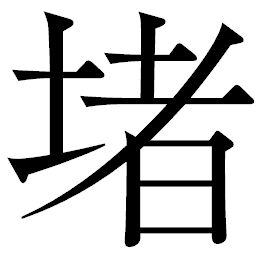
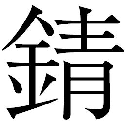
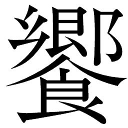

🏠
日
月
縦書き／横書き
| 〔小説〕SAMURAI7 第二巻 | |
| 冨岡 淳広 | |
| ゴマブックス (2005) | |
この本は縦書きでレイアウトされています。
また、ご覧になる機種により、表示の差が認められることがあります。
制作協力......株式会社ゴンゾ 笠間寿高
企画協力......深谷精一
第五章 ご冗談を！
開口一番、鍛冶屋マサムネの工房に足を踏み入れたコマチは素直な感想を言った。
「ふわー、ほんとにきったないです」
「これ、コマチ」
「でも姉さまだって、掃除しなくちゃって思ってるです」
「それは......、そうなんですけど」
キララの声は、マサムネに恐縮がってだんだん小さくなっていった。
彼女は天井まで高々と積み上げられた工具や廃品の山を見上げていた。そんな山がいくつも天井に向かって伸びている中、ふいごの前に申し訳程度に置かれた小さな椅子
の周囲にだけ、何もない空間がある。それがマサムネの作業スペースで、手が届く範囲には作業に必要な道具類がやはり乱雑に置かれていた。寝床にしているらしい座敷にも何に使うのかわからないスクラップが押し込まれ、物置と化していた。
ヒョーゴの襲撃によって木賃宿
をサムライ探しの根城にし続けるのは危険と判断したカンベエたちは、マサムネの申し出を受け、第六階層にある彼の工房を新たな根城とした。
そこは機械の中に人の居住空間が圧迫されているという表現のほうがぴったりくる工房だったが、マサムネがあちこちから拾い集めてきたスクラップが表にも高く積み上げられて入り口を覆い隠してくれているおかげで、人の出入りは目立たない。
「だっはっは！ 気にすンなって。適当に片づけて好きに使ってくンな。なにしろここに七人のサムライを集めなきゃなンねえンだろ？」
「とっつぁん、ずるいぜ。そう言って百姓どもに掃除させようって魂胆だろが」
マサムネが気のいい笑顔で言うと、すかさずキクチヨがまぜっかえした。
「おめぇだってたまにここで寝てるンだからよ、ちったぁきれいになったほうがいいだろが」
「キクチヨ様、部屋ァ貸してもらうだで、掃除ぐらい俺たちがやるだよ」
リキチは座敷にあがった。適当に積まれたスクラップ類を片づけて、大人数の寝る場所を作らなくてはいけない。
「いや、ことは一刻を争う。休む暇があるなら、儂
らはサムライを探すとしよう」
カンベエはヒョーゴの次なる襲撃を警戒していた。
その鋭い声に、キララの表情が翳
った。
「すみません、マサムネ様......。私のせいで、大変な御迷惑を......」
キララの沈んだ声は、まだ傷の鈍痛が残るカツシロウの胸を突いた。キララのせいじゃない、本当に不甲斐
ないのは自分だ。唇を噛むカツシロウを視界の隅に捉えているカンベエは若い二人の懊
悩
を感じ取っていた。
「だから気にすンなって。ねえちゃんのせいじゃねえさ。ンなことより、俺はあんたたちもカンベエさんも気に入ったんでね、気持ちよく世話焼かせてくれや」
「っかーっ！ とっつぁんカッコいいや！」
茶々を入れてきたのはキクチヨだ。ヒョーゴとの戦いでもいいところなし、カンベエとヒョーゴ二人の「サムライ」の斬り合いに圧倒されていたキクチヨだったが、一行と離れるつもりは毛頭なかった。工房の片隅でいつも寝転がっている自分の「巣」に大股を開いてどっかり座りこむと、排気管から「ぷっ」と噴気する。
「オレ様は行くからな、カンベエ！」
「おぬしが決めたこと、儂は止めぬ」
キクチヨを見るカンベエの目は、厳しさを含みながらいつもどこか穏やかだ。その真意を知る由
もないキクチヨには、コマチがすっかり懐
いていた。
「やったですよ、おっちゃま。今のカンベエのおっさま、いいって言ってるってことです！」
「はーん、どうかなァ？ 勝手にしろって言われたのとおんなじだろ」
カンベエに自分から何か言うたび、あるいは言われるたび、キクチヨはふてくされてしまうばかりだ。その複雑な思いをカンベエはしっかりと感じ取っていた。
「なあ、カンベエさん。サムライなら、一人面白い男がいるぜ」
マサムネは、キクチヨとカツシロウに促すような目配せをした。
勅
使
来峡を翌日に控え、準備に追われるアヤマロ御殿の奥にある閨
で、ウキョウはようやく自分を取り戻していた。機械のサムライ・キクチヨに過剰な反応をしたウキョウだったが、浮舟邸から連れてきた御
側
女
衆
の介護が功を奏したようだ。なにより彼を「寝ていられない」と突き動かした理由が、機械のサムライを斬りに行ったはずの、養父アヤマロ肝煎
りの刺客ヒョーゴのぶざまな敗退だった。
かむろ衆の報告によるあまりにも情けない敗退の理由に、ウキョウはいてもたってもいられず、閨を飛び出した。
長い回廊を渡ってアヤマロのもとに向かったウキョウは、常夜灯のぼんやりとした灯かりに照らされて庭先で佇む男に目をとめた。
もう一人のアヤマロの用心棒、キュウゾウがいた。虚無的な伏し目がちの瞳で木々の間に立っている。両手を無防備に下げて、立ったまま死んでいるかのようで生気がまるで感じられない。まして夜、庭を淡く浮かび上がらせるように灯
って点在する、常夜灯の仄明るい中に悄
然
と立つキュウゾウは、幽霊と見間違えてしまいそうだ。
ウキョウはキュウゾウが苦手だった。いつも何を考えているのかわからないうえに、喋
った姿を見たことがないので薄気味悪くさえ思っていた。キュウゾウが戦っている姿を見たこともないので、強いのかどうかさえわからない。相棒ともいうべきヒョーゴが敗退したことで、養父の用心棒たちへのウキョウの評価は急降下していた。
下から上に噴き上げてくる風も、最上層の御殿の中ではやわらかな流れとなる。その風にあおられて、木々の枝から葉が数枚落ちた。
キュウゾウの左右の手が、上下に背負った刀の柄
に伸びた。一本の大振りの鞘
の上下に二本の刀をおさめた二刀流。左手で上の柄を摑んで引き下ろすと、下の柄を腰の位置まで撥
ね上げる。刹那
、下の柄を右手が摑んだ。常夜灯の光に刃を煌
めかせて一気に抜刀した。
二本の閃光が落ちてくる数枚の葉を斬った。二つに裂かれた葉が落ちていく。
音もなく刀を鞘に収めたキュウゾウに、回廊からウキョウが渇いた拍手を打ち鳴らしてきた。
「次、君行きなよ」
キュウゾウは肩越しに振り返った。幽鬼的な瞳に、ウキョウは逆に畏
れを感じた。
「君の相方
、だめだったんだってねえ。やっぱりサムライの相手はサムライがやるべきじゃないかと思うんだよねえ」
キュウゾウは黙ってその場を離れていった。
姿が見えなくなるとウキョウはどっとため息をついた。
「......あいつ、疲れる」
かむろ衆の番小屋で、ヒョーゴは酒を喰らって荒れていた。下層へ落ちたときにヒビの入った眼鏡を外すなり、瓶
から直接、浴びるように酒をあおるばかり。相手をさせられるかむろ衆こそいい迷惑で、腫れ物にさわるようにひたすらヒョーゴの御機嫌とりに徹していた。
番小屋は広大な敷地を持つ御殿内に点在している。目が行き届くように細かく警備区域は分けられていて、番小屋はかむろ衆の休憩所としての機能も持っていた。
事務所としての一室と、寝泊まりする座敷の狭い建物だ。ヒョーゴはその一つにふらりと現われ、怯
える部下たちを相手に一人で飲み、酔い、カンベエヘの憤りをぶちまけているのだった。
戻ってきたヒョーゴに、アヤマロはただ休めと言うだけだった。気の毒そうに見ていたテッサイは、かむろ衆たちに百姓とサムライたちの人相書きを作成させ、追跡調査をさせることを怠らなかった。自分にかわってかむろ衆を動かすテッサイの手際の良さに嫉妬を覚えたが、なにより腹が立つのは自分に対してだ。あんな野良犬ごときに、しかも口にするのも憚
られる手段で負けてしまったことが、ヒョーゴのサムライとしてのプライドを大いに傷つけていた。
そこに、キュウゾウが入ってきた。ほっと安
の表情を浮かべたかむろ衆に、彼は短く低く、言った。
「ここは俺が」
かむろ衆は助かったと言わんばかりに、先を争って出ていった。
その様子を、濁った目で見送ったヒョーゴはのっそりとキュウゾウに向き直るや、酒瓶を掲げて卑屈な笑みを浮かべた。
「お前もつきあえ」
キュウゾウがいきなり上の刀を抜き、ヒョーゴがあおる酒瓶を叩き割った。
割れた酒瓶から中身が大量にしぶき、ヒョーゴの顔から服から、全身にぶちまけられた。文字どおりの酒浸
りになったヒョーゴは、怒りにまかせて刀に手をかけた。
瞬間、キュウゾウがその腕を峰打ちする。激痛に手首の痺れたヒョーゴは、刀を落として、血走った目をキュウゾウに向けた。
「お前なら、奴を斬れるかもな」
背を向けたキュウゾウに、ヒョーゴは声をかけた。
「だが気をつけろ。奴は、勝つためならなんでもやるぞ」
言葉にして、ヒョーゴは気づいた。島田カンベエの剣は武士道の剣ではない。戦
場
を生き抜くための剣なのだ。道理ではなく、斬り合い、勝つための剣。少しも
びついてなく、いつでも空に還ることの出来る剣――。
思い知らされた。自分は御殿の中で安穏としている時間が長すぎたようだ。だが、いつも空を眺めているキュウゾウなら、あるいは......。
キュウゾウは番小屋の扉を閉めた。気配が遠ざかるのを感じながら、酒の匂いにまみれたヒョーゴはいつしか眠りに落ちていった。
◎
翌日の朝は、上層に行くほど緊張感が漂っていた。都からの勅使、来峡。
前夜からかむろ衆の警備は徹底され、目障りな物乞
いや露天商は一掃されて下層に追い立てられた。組主
たちの尽力で大店
の前の通りも整然としている。人通りも規制され、さながら勅使のために街を化粧したようなものだった。
アヤマロにとって、今日はハレの日だった。数年前に都の一員に名を連ねてから、定期的に行なわれている勅使の来峡。それは街の発展の視察だ。アヤマロがいかに商いを成功させているか、大いに自慢の出来る日でもあった。
勅使は供の者数人と共にやってきた。乗り物は大戦時から活躍している御
用
車
であり、武装を外され、壮麗な装飾を施す改造がなされていた。大戦時の道具がこうして武装を解かれて流用されていること自体、やはり時代の覇者はサムライではなくアキンドだと告げていた。
虹雅峡を訪れた勅使を迎えるアヤマロは、緊張のあまり普段の倍の汗をかいていた。
勅使の全身は白で統一されていた。アヤマロほどではないが、肉付きがいい。顔は白塗り、耳には長いピアスを下げ、緩慢な動きにしかならない白と金の衣装はゆったりと大きく、袖は一本一本に指輪をはめた指先よりも長い。裾をひきずるように歩く姿は、スロー再生の映像のようだった。
御殿の正面玄関前に整列したアヤマロと組主衆は、勅使一行を前に深々と頭を下げた。勅使は軽く顎
を引くだけの尊大な返礼をすると、都から来る者独特の甲高い発声で言った。この発声は都では作法だという。
「本日の
応
役
は御子息と伺っておりましたが、いずれにあらしゃりますえ？」
「は、急な病にて床に臥せっておりまする」
「それはそれは......、お大事にさっしゃりますよう」
「お心遣いまことに痛み入ります、御
勅
使
殿
。さあ、お疲れでしょう。本日はゆるりとお休み下され」
「今日より五日間、短き滞在にあらしゃりますが、世話になりますゆえよろしくお頼み申しまする。さて......、わたくしは、虹雅峡
の視察に参っておりますゆえ、さっそく街を見たいのですが。よろしゅうございまするかな」
視察が先、と言われてアヤマロの背中に緊張の冷や汗が滴
った。都は商いの充実と発展をとかく命題としている。サムライと違い、意に添わぬからといって無礼討
ちなどあろうはずもないが、商売上損を重ねるばかりと都が判断すれば、都を中心に整備されている商売のネットワークからは容赦なく外されてしまう。今まではうまく推移していても成長率がひとたび下がれば、下手な商いを責められ、外されてしまう可能性はないとは言えないのだ。
淡々と、ほとんど口を動かさず喋る勅使。これまで見る限り、それが作法と言わんばかりに皆、判で押したような喋り方である。聞くところによれば、都では何事も過剰な物言い行ないは厳しく作法違いと呼ばれているとか。そんなことを思いながら、代わりの
応役となった組主代表をアヤマロが紹介しているさまを、御殿の上層の窓からウキョウが見下ろしていた。
ウキョウの目は、勅使に向けられていた。冷めた目で、長い髪を指先で梳
きながらじっと見下ろすそのさまからは、何の感情も読み取ることが出来ない。
その日の昼、マサムネはさんざん探し回って、芸人・ゴロベエを連れてきた。ウキョウの浮舟邸襲撃の前後にカツシロウをいじり倒した男の「芸」の裏に隠された凄みは、まさしくカンベエの求めるサムライではないのか。刀鍛冶でもあるマサムネは、どうしてもゴロベエをカンベエと引き合わせたかったのだ。
工房の表で人待ち顔のコマチが、マサムネと『命売ります』の幟
を立てた露店を引いたゴロベエに気づいて慌てて中に戻ってきた。
「姉様！ 戻ってきたですよ！」
そのとき工房の中では、囲炉裏
の周りをどうにか人の座れる空間にして、カンベエとカツシロウが待っていた。キララとリキチは台所に立ち、米の飯と汁物を作っている。キクチヨはカンベエがどうするのかと、興味津々で巣から見ていた。
キクチヨの視線の期待に応えるかのように、カンベエは囲炉裏から薪を一本抜き取ると、カツシロウに投げた。
「入り口に身を隠して上段に構えろ」
薪を受け止めたカツシロウは、カンベエの意図をはかりかね、戸惑った表情を見せた。
「何を......？」
「サムライが入ってきたら、思いきり打ち込め」
試すのか、とカツシロウは察し、顎をひいて頷
いた。
「わかりました」
ちょうどそのとき、工房の入り口にはマサムネがゴロベエを先に通していたところだ。機械が積まれてトンネルのようになった入り口から、ゴロベエの影が工房内に伸びてくる。
カツシロウは戸口の横に立ち、薪を上段に構えた。
キクチヨ、キララとコマチ、リキチはどうなるのかと息を詰めて待つ。
囲炉裏端であぐらをかき、入り口を見据えるカンベエは静かに呼吸を続けていた。
伸びてくる影に、構えたカツシロウは打ち込む間合いをはかって集中し、浅い呼吸になった。我知らず緊迫し、薪を持つ掌が汗ばむ。
伸びてきた影は、戸口まで来て中に入ることになく、急に止まった。
中にいたカンベエを正眼に見て、ゴロベエは半歩下がると頬
の傷を歪
めて楽しげな笑みをみせた。
「......ご冗談を」
カツシロウの殺気を感じ取ったのだ。
思わずカンベエは膝を叩いていた。
「お見事！」
一同から安
のため息がもれた。
キララは白飯を盛りつけた椀をゴロベエの前に置いた。炊き立ての米だ。
囲炉裏端でカンベエと対座してあぐらをかいたゴロベエは、カンベエの後ろに控えるように座ったカツシロウや、スクラップの山の中に座り込んだキクチヨに瓢々
とした笑みを投げかけた。
「おぬしたちに、また会えるとはな」
「こっちもびっくりだぜ、芸人風情がよォ」
「これは手厳しい」
キクチヨはまだ、芸人ということでゴロベエに信用がないようだったが、ゴロベエはまったく意に介していない様子で、視線をカンベエに戻した。
カンベエは、皆が見守る中でまずは戸口での試しを詫
び、続いてカンナ村からの依頼内容を話して聞かせた。
リキチには、飯にまったく箸
をつけないゴロベエが不思議だった。今までのサムライは、皆真っ先に飯を食べたというのに。
話の結びに、カンベエは「ご冗談を」の一言が、これから始める戦にどれほど心強いものになるかを説いた。欲しいのは、戦
に勝つために必要なもの――サムライ。
「ほお......、某
をして百万の援兵と申されるか」
「知行や恩賞にはまったく縁のない戦だ。褒
美
と言えば、腹いっぱいの飯のみ」
カンベエはゴロベエの濃褐色の瞳の奥を読むかのように、それ以上言葉を紡がず、返答を待った。
ゴロベエは口元は穏やかだったが、やはリカンベエという男をはかって見据え続けた。しかしほどなく、厳しく細められた目が、笑みに変わった。
「やりましょう」
カンベエは安
して頷いた。
「かたじけない」
リキチたちはすぐに床に手をつき頭を下げた。ついに、二人目のサムライが現われたのだ。
「ありがとう存じますだ！」
「よしてくれ、某、仏様ではないのだから......。某が村に行くのは、情けゆえでも飯が食えるからでもないのだ」
キララたちは顔を上げた。では、なぜ――？
ゴロベエはキララたちからカンベエに視線を移した。
「某は、カンベエ殿......、おぬしと、戦
場
に立ちたいのだ」
カンベエは、ゴロベエの正直な言葉に目元を緩
ませた。
ここにも、あの空をいまだ忘れられぬ男がいたか――。
ひととき感慨が心を去来した瞬間、ゴロベエが問いかけてきた。
「おぬし、空ではいずれにいた？ 北か、南か」
大戦を引き起こした二大勢力はその国家の位置関係から、通称を北軍と南軍と呼ばれていたのである。
「北だ。おぬしは」
カンベエは問い返した。
「南でな。するとおぬし、敵だったか。某のいた戦線で会わなくてよかったものよ」
「ほう、なにゆえか」
「先日、上の層であった押し込み退治。某も野次馬の一人でな。あの太刀さばき、震えがきた......。あんな剣と戦場で会っていたら、某はおぬしに斬られていたかもしれん。あの頃の敵味方が、いまこうして共に戦をしようとはな」
「やーれやれ。一番はいつだってカンベエなんだよな！」
キクチヨはふてくされて横になってしまった。
「まぁまぁ、くさっちゃだめです、おっちゃま。ご飯食べるですか？」
「......食べる」
キクチヨはむっくり起き上がると、コマチが持ってきた飯に箸をつけた。その豪快な箸運びに、ゴロベエは思わず目を見張っていた。
「ほお、いい喰いっぷりだ。おぬし、首がつながってよかったな」
「オラが拾ってあげたですよ」
コマチが「えっへん」と胸をはった。
「威張ることじゃねえだろ、チビっこ！」
「あれれー、オラが首拾わなかったらおっちゃまどうなってたですか？ もし犬がくわえてどこかにいっちゃったら大変ですよ」
「オレ様は無敵だ、ンなわけねえだろ！」
「無敵なオレ様が、なんでカンベエのおっさまに首すっとばされるですか」
「うががが、それを言うんじゃねえッ」
「ね、ゴロベエ様、おっちゃま面白いおサムライでしょ。オラの子分です！」
「ほお、子分とは」
「勝手に決めるんじゃねえッ！」
キクチヨは憤激してまたしても箸と飯椀を食べてしまった。それでも怒りはおさまらず、子供相手に本気にもなれず、矛先
は強引にもゴロベエとカツシロウに向いた。
「ええい、カツの字もなんか言ってやれ。こいつはサムライのくせして芸人やってたんだぞ！」
「いや......、先生が認めた御仁だ。我らが、芸という表向きに目を奪われすぎてゴロベエ殿の力を見抜けなかったということではないか？ マサムネ殿のほうが我らよりもよほど、目が肥えているのではないか......」
「なんだよ、おめぇもゴロベエの味方かよぉ？」
キクチヨはまた噴気して、コマチに「よしよし」と肩の装甲板を叩かれていた。
カツシロウはゴロベエに静かに頭を下げた。命を張った芸につきあわされたとき、さんざんに武士を愚弄
していると非難した男が、いまカンベエに認められ、カンナ村に行くと言ってくれているのだ。己の不明を恥じ、素直に謝らずにはいられなかった。
「ゴロベエ殿......。無礼の数々、どうか許してほしい......。こうしてまた会えたのは、まさに縁
。どうか、彼ら百姓たちを救ってやってほしい」
「そう思いつめるものではない。まぁ若いうちは某も似たようなものだったが、そんな調子ではすぐに八方塞
がりになってしまうぞ。肩の力を抜け」
始終ゴロベエのペースだった。彼の舌は滑らかこの上ないようで、戦後、芸人を選択したのもそれゆえかと思うほどだ。
カンベエも同様に、百姓のために、という大義をさておき、敵味方がここに手を組む不思議を思った。目の前にいるのは、戦場で会っていたかもしれない男――。
しかし、いかに斬り合いに優れようとも、自分たちは駒にすぎない。戦場の雌雄を決するのは、作戦を展開する指揮官の質なのだ。南軍も北軍も、結局はアキンドに負けた。戦場を失って芸人に身をやつした男が、また戦が出来る、自分と共に剣の腕を奮いたい、と心を躍らせている。行き場をなくしたサムライが、サムライでありたいと願って自分のもとに集ってくれた。
カンベエは、最後の決戦以降再会することなく時を経てきた古女房を、ふと思い出していた。
午後になって、カンベエたちのサムライ探しが動き始めた。前夜就寝前にキララは村長
のギサクに宛てて、 コマチは友達のオカラに宛てて手紙を書いていた。この二通を持って、キララは一つ上の階層にある飛脚屋に足を運んだ。またウキョウの手下にからまれたら、という不安はつきまとっていたが、カツシロウが供をかって出た。
ゴロベエがリキチを伴って出ていくと、キクチヨも大太刀
を担いで立ち上がった。
「ハイハイ皆さん気張っていってこい！ オレ様はそのへんで昼寝でもしてくらぁ」
「キクチヨ」
と、カンベエが声をかけた。
「なんだよ」
「お前にも、サムライ探しを頼みたい」
予想外の言葉にきょとん、と立ち尽くしたキクチヨの足元に、コマチが駆けよってきた。今日は留守番で、米を炊いて準備しておく役目である。
「よかったですね、おっちゃま！ 一緒におサムライ探すですよ。カンベエのおっさま、おっちゃまのこと認めてくれたですよ！」
「くうう～っ、やっぱおめぇ、話のわかる奴だと思ってたんだよ、オレは！」
「村に連れていく、とは言っていないぞ」
「へっ!?
」
キクチヨとコマチは同時に、思いきり不満そうな声をあげていた。
「猫の手も借りたいときだ。村を思うおぬしなれば、サムライを見つけ出すことも出来よう」
「......そんだけ？」
「それだけだ」
「あんた、なんでオレ様をサムライって見てくれねえんだよッ！」
キクチヨは激しく噴気し、大太刀で床を貫いた。
「また壊しやがって......」
マサムネは落胆の声を出した。家を破壊されないだけ、まだましか。
キクチヨの剣幕に、コマチは畏れをなして涙目になっていた。
カンベエは、まるで動じなかった。わざとキクチヨを怒らせているようでさえある。
「おぬし、サムライでなければならぬか？」
「へへんのヘーんだ！」
キクチヨは憤然として、大太刀を担いで出ていった。しゃくりあげながら見送ったコマチは、カンベエから「ぷいっ」と顔をそむけ、竃
のある土間へと入っていった。
カンベエは腰から刀を鞘ごと抜いた。一瞬、巻き起こりかけた小さな嵐は、キクチヨのほうから矛を収めて終わった。カンベエもキクチヨのことは気掛かりだったが、今はサムライを揃えることこそ、急を要することなのだ。
「マサムネ殿。砥石を貸してはくれぬか」
「お前さん、自分で刀を研ぐのかね」
「己の得物
だからな」
「そう言わず、研がせてくれんかね。これでも刀鍛冶のはしくれよ」
マサムネの頼みに、カンベエは刀を預けた。
刀身を柄から外すと、マサムネは砥石に水を垂らし、刀を研ぎ始めた。マサムネ自身、戦後久しく見ていなかった真剣による命のやりとり。刀鍛冶マサムネの胸にも、熱い火がついたらしい。瞳に憑
かれたような輝きを宿して、黙々と研ぎ続ける。その間、カンベエはじっと腕を組み、彫像のように動かず作業が終わるのを待っていた。
「キクチヨとは、長いのか」
思わぬカンベエの問いかけに、マサムネは一瞬動きを止めた。
米を炊くために火を熾
していたコマチが興味深そうに聞き耳を立てている。
「もう五、六年にもなるか。長いかもしれんねェ」
マサムネは記憶をたぐるように視線を泳がせて答えると、また刀を研ぐ作業に戻った。
「よその土地で会ったんだがなァ、はじめて会ったときは足ぶった斬られて動けなかったのよ。かわいそうに思って直してやって、それからの腐れ縁さね」
「元の体は、どうなったのだ」
「捨てちまったらしいぜ。戦終わって行くアテなくて、野伏せりとは言わねぇまでも食ってくためにずいぶんなこともやってきたらしい。まァ、あんまり昔のことは話したがらねぇけどな」
マサムネは聞き耳をたてているコマチを意識してか、踏み込んだところまでは話さない。しかしカンベエにはそれだけで、キクチヨがこの街に来るまでどんな暮らしをしてきたかおおよその察しがついた。
「あいつはとにかく喧嘩
ばっかりよ。どこで作ったのかあのでっけぇ刀でなんでもかんでもぶった斬ってなあ。いつも何かに怒ってて、手足ふっとばされたことなんか一度や二度じゃねえ。よく今まで生きてこられたもんだぜ」
「おっちゃまは強いんです。負けないです。だから、生きてこられてるんです！」
コマチはわけ知り顔で、語尾強く口をはさむと、火吹き竹で竃の火をあおった。子供の力ではさほど燃え盛らないのを見て、カンベエがコマチの目線に屈んだ。
「手伝おう」
「いいです！」
コマチはぴしゃりとカンベエを拒絶した。ぷうっと頬を膨らませて、そっぽを向いてしまった。
「よしなよ、カンベエさん。お嬢さんは御立腹だ。あんたがキクの字に冷たくあたるモンでさァ」
マサムネが助け船を出して、コマチの気持ちを代弁してやった。
「おっさま、なんでキクチヨのおっちゃまのこと、いじめるですか」
「人にはそれぞれ、己が生きる道があるのだ」
カンベエは諭
すように、そしてキクチヨのプライドも十分に推
し量
って、少女に返答するのだった。だが、コマチには今一つ伝わらなかったようだ。きょとんとした表情から眉間
に皺をよせて、さらに頬を膨らませてしまった。
「おっさまの言うこと、おら、難しくってわかんねぇです」
マサムネは二人のやりとりを苦笑いして聞いていた。キクチヨやカツシロウは半人前に扱う割に、コマチにはオトナとして対応しようとしているカンベエ。サムライという仕事に彼が何を求めるのか、研ぎ上がった刀身が弾く水を拭き取りながらマサムネは問いかけてみたい思いだった。
「さあ、これでいい」
マサムネは刀を組み立て直すと、刃文
をさまざまな角度から見て言った。
カンベエはコマチのもとからマサムネの作業場に戻ってくると、刀を受け取った。
「いいワザモノだ」
「恐れ入る」
カンベエは刀を鞘に収めた。渇いた鍔鳴
りが響き、その余韻の中でカンベエは佩刀
した。
「ずいぶんと大事にしなすって。ちょっとした眼福だァ」
マサムネは、カンベエのサムライヘのこだわりの理由を刀に求めていた。
「戦はもう、十年がとこ昔の話だ。だけどその刀を見ると、あんたはいつでも戦に出られるってェ寸法じゃねえか。まるで、今度のカンナ村みてぇなことがあったときに、すぐにでも行けるようになァ。なんでだい？ そんなに戦したいものなのかね」
コマチは聞きながら、姉が言っていた「戦場の匂い」という言葉を思い出していた。
「ひとたび人を斬ると、亡霊に憑かれるものらしい」
カンベエはそう言い残して、サムライ探しのために表に出た。
飛脚屋の「足」になるのは早亀
と呼ばれる生物である。筋肉質の長い後ろ足が発達しておりとてつもないスピードで走る。背中には馬の鐙
にも似た甲羅があり、休むときはこの甲羅の中に頭と短い両手を引き込み、長い足を折り畳んでしゃがみこむ。早亀に配達員が乗って文や荷物を運ぶ仕事は、古くから親しまれている情報伝達技術であった。
店を訪れたキララとカツシロウは二通の手紙を店主に預けた。店主は組主の一人でもあり、浮舟邸襲撃の下手人としてかむろ衆からまわってきた人相書きに酷似する二人を見て、ただちに付近の番屋に人を走らせていたが、そのことを二人は知らなかった。
文箱に二通の手紙をいれた飛脚の少女は、元気よく早亀を走らせて街を出発した。
砂煙を舞いあげて走る早亀を見送って、キララは深く頭をさげた。無事に手紙が届きますように、と。
「さあ、サムライ探しを始めましょう。稲穂が頭を垂れるまで、時間はないのです」
キララは自分を奮い立たせるように言って、歩き出そうとした。ところがカツシロウが動かない。どうしたのかと振り返ると、なにやら思いつめたような表情だ。
「マサムネ殿の店に戻ってはどうだ」
「なぜですか......？」
「そなたはウキョウという男につけ狙われている。わざわざ刺客を送りこんできたほどだ。ことはこのまま済むとは思えぬ......。ましてこの街は、彼らが支配する街だ。村の手前、自らを危険にさらすことはないのではないか？」
「でも......、おサムライ様を探す手は少しでも多いほうが」
「わかっている。だが、私はもう、そなたを危険にさらしたくはない」
そう言った瞬間、早駆けの荷車が往来を激しく駆け抜けていった。
「おぉら！ どいたどいたどいたぁーッ！」
荷運びの職人は、荷車を引きながら威勢のいい掛け声で警告していく。通りを歩く人々が皆、迷惑そうに端に寄った。同様に慌てて荷車をやり過ごそうと通りの隅に身をよせたカツシロウは、自然にキララの手を摑んで引き寄せていた。
不意をつかれたかたちになったキララは、カツシロウの胸に自然に飛び込んでいた。それはカツシロウにとっても思いがけないことだったらしく、二人ともわけもなく鼓動が高鳴った。キララはすぐに、顔を恥ずかしげに伏せてカツシロウの体から離れた。
「すみません......」
「いや......、言ったはずだ。この手を、二度と離さぬと。そなたをこれ以上、危険にさらしたくはない」
カツシロウの瞳から、彼の気持ちが伝わってきてキララは戸惑い、目を伏せた。
◎
その夜、謁見の間には山海の珍味を並べて、勅使を歓待するアヤマロの姿があった。
応役組主衆の接待も滞りなく、勅使は到着早々に街を視察してまわった。その顔には一貫して穏やかな笑みが浮かび、事細かに質問を繰り返し、アヤマロの商いがいかに順調かを確認すると満足そうに頷いたのだった。
「本日は歓待まことに感謝の極みにあらっしゃりますえ。皆々様より伺いましたるお話は逐一御天主様に御報告さしあげまするが、まず間違いなくお喜びあそばすことにあらしゃりましょう。虹雅峡は他の街に比べましても商いの伸びまことに高く、都にとりましても誉
れと呼ぶべきものにあらしゃりましょう」
「過分なるお言葉を賜りまして恐悦至極にございますぞえ」
アヤマロは興奮気味に、汗を浮かべながら返答した。勅使は大いに満足しているようだった。
応役の組主たちはウキョウが筆頭でなくてよかったと心から安
し、アヤマロもほっとしつつあった。これからの滞在の数日を、勅使に快適に過ごして帰ってもらうためにはまだまだ緊張の瞬間が続くが、まずは最初の関門を無事に過ごしたという手ごたえがあった。
「御勅使殿、本日はゆるりとお過ごしくださいませ。お望のものがあれば申し付け下され」
「お心遣い痛みいりますえ、アヤマロ公。いずれそちを、都に御案内いたしましょう」
勅使の笑顔は崩れなかった。しかし、眉毛を抜いた一重の目までは笑っていなかったことにはアヤマロは気づいていなかった。
その頃には、組主からの通報を受けたかむろ衆が動き出していた。勅使来峡の折で無用な騒ぎを起こしたくないアヤマロは、絶対に手を出すなと言い、ただ尾行して所在を突き止めろという指示を出した。
二名ずつ、交代でカツシロウとキララを探すかむろ衆だったが、いくら若輩といえどカツシロウも鍛えられた武士、すぐに監視の目を感じ取り、尾行をまいた。キララには何も言わなかったものの、気が気ではなかった。
夜になってマサムネの工房に戻ったカツシロウは、みんなが寝静まったのを見計らってカンベエとゴロベエに尾行の存在を告げた。
ゴロベエがふと思い出したように、
「キナ臭くなってきたな。街で小耳にはさんだのだが、上のほうでは都からの使者が来ていて非常に厳重な警戒だそうだ。我らの動きも、その警戒の中で目をつけられているのかもしれん」
「都か......」
カンベエは顎鬚
をなでた。思案している。
「とはいえ、向こうが手出ししてこない以上はこちらから打って出ることもあるまい。勅使と我らはなんら関わる必要がないのだからな。感づいたら、まけばよい。おぬしにはそれが出来る。今日のようにな」
カツシロウは、カンベエが今日の自分の判断を褒めてくれたようで安
した。
「キララ殿には？」
「言う必要はない。負担になるだけだ。おぬしがあの娘を守りたいというなら、どこまでも守れ。よいな」
アヤマロはウキョウの性格を考えて、百姓発見の事実について箝口令
を敷いたが、翌日には身の回りの世話をしている御
側
女
衆
によって耳に入ってしまった。
何も聞かされていなかったウキョウはすぐにテッサイを閨に呼びつけた。
「なんで僕を無視するの？」
閨の衝立
の前で控えたテッサイは、その影に溶け込むようにして返答した。
「御勅使殿来峡の折ゆえ、騒ぎ立て無用との御前の判断にございます」
「わかってるよ。僕はここにいるってば。信用ないなあ。ただ、どうして教えてくれなかったのかなって思ってさ。テッサイは知ってたんだろ？ 仲間外れみたいなのはやめてほしいんだよねえ」
寝台で半身を起こしたウキョウはカラリと応じた。
「は......、まことに申し訳ございません」
「僕だって今がどんなに大事なときか、知ってるよ。おとなしくしてたほうが父上のためにもなるんでしょ？ でもさ、かむろが連中の居場所を突き止めたら、今度は僕にも教えてよね」
「お言葉を返すようではありますが、若がきゃつらの居場所を知っていかがなさるというのです？」
「そんなこと前から言ってるだろ。キララクンだよ。欲しいに決まってるじゃない」
声に次第に不機嫌な怒気がこもってきたことに気づき、テッサイはそれ以上何も言わなかった。アヤマロからはサムライも百姓も斬れと言われているが、ウキョウの指示も無碍
には出来ず、しばらくは動きを監視して様子を見るしかないか、とも考えていた。
それ以上に、テッサイはアヤマロから聞いたウキョウの過去が気になっている。摑みどころのない、いくつもの顔を使い分けるウキョウ。仕える身として、勅使がいる間は何事も起こらぬよう、テッサイは祈るばかりだった。
テッサイが の向こうで遠ざかると、別の
が開いてゴーグル男が音もなく入ってきた。
の向こうで遠ざかると、別の
が開いてゴーグル男が音もなく入ってきた。
の向こうで遠ざかると、別の
が開いてゴーグル男が音もなく入ってきた。「よいよね。よろしく」
ゴーグル男は黙って頷き、
を閉めた。
を閉めた。「さ、果報は寝て待て。だよねえ」
ウキョウは抱き寄せたワーリャの肌を、指先でそっとなでた。
「ウキョウ様ったら」
と、ワーリャはその指をかわし、絹のガウンを羽織った。
「どうして、あんな田舎娘に御執心なのです？」
「一度は僕の手に入ったのに。逃げちゃうからだよ」
ウキョウの瞳には感情の色はなかった。
「僕はね、アキンドなんだ。出来ないことは何もないし、手に入らないものは何一つないんだ。でもねえ、キララクンは僕の手から逃げたんだよねえ。それがねえ、許せないんだよ。それだけだよ。僕の思うとおりにならないものなんか、あっちゃだめなんだよねえ......」
第六章 惚れた！
ゴロベエが加わってのサムライ探しが始まって、二日。かむろ衆の動向が気になりつつも、何事もないまま時間だけが過ぎていった。ゴロベエ以降、首を縦に振ってくれるサムライにはいまだに出会えない。
「いやはや、芸事とはまるで違うものよ、サムライ探しは」
短髪を申し訳なさそうにかきながら、通りの真ん中でゴロベエは途方に暮れていた。
「おサムライ様が気に病むことねえだで」
ねぎらうようにリキチが言った。
食い詰めた浪人を探してかなり下の階層に行ってはみたものの、話を聞いても頷
いてくれる者はまるでいなかった。足を棒にして一日歩き回っても成果はなく、ゴロベエは、自分やカンベエがリキチたちと出会うことが出来たのは極めて稀な出来事だったのかと一人感心するのだった。
「某
は随分と物好きなのかもしれんなあ」
「そんなことねえだで」
励ますように答えるリキチも、疲れきった重い足をひきずるようにして歩いていた。疲れすぎて、それ以上話す元気もない。今朝、マサムネの工房を出たまではよかった。カンベエ、ゴロベエと次々に出会えて浮き足立っていたのかもしれない。じっとりと脂の浮いた頬をぬぐって、目線を下に黙々と歩き続けていた。
「なに、くよくよするな。次があるではないか」
見かねてゴロベエが声をかけた。
「へえ、次......。だども、こんだけお声がけしても、一人も......」
消え入りそうな声のリキチに向き直ったゴロベエは一喝するように声を張った。
「リキチ。そんな声ではサムライは話を聞いてくれぬぞ。戦
場
でも、声の大きい奴のほうが生き残る。なぜかわかるか。大きい声を出せるということは、それだけの力が残っているからだ。それだけ、生きる力も大きいというものだ。おぬし、田んぼでもそんな蚊の鳴くような声なのか？」
「田んぼは......、街とは違うだで。みんな、顔も知ってるし、歌うたって田植えすンのがならわしだで」
「歌か。いいではないか。そのときと同じに声を出せばよいのだ。もっとへその下に力を入れて、生き生きとこう言ってみろ。おサムライ様。あなたに惚れました」
「へ!?
」
「嘘も方便というものよ。惚れたと言われりゃあ、サムライだって悪い気はしないというものだ」
「そういうもんだか......」
リキチは思わず、まわりを見渡した、人通りが少ないと言っても、往来にはそれなりに通行人がいる。おどおどと視線を走らせるリキチを見て、さすがにゴロベエも呆れた。
「誰も見てはおらぬ。さ、腹の底から声を出してみろ。ホレ！」
ゴロベエの一喝に弾かれたように、リキチは声をあげた。
「おっ、おっ、おサムライ様！ あなたにっ、惚れました！」
リキチは力いっぱい声を上げたつもりだったが、耳まで真っ赤になるほどの照れが先に立って声が裏返ってしまった。道行く人々が驚いて振り返り、その人たちと目があうものだからさらに真っ赤に小さくなってしまった。
「いい奴だな、おぬしは......。しかしな、それではいかんぞ。それでは客は集まらん」
「客!?
これは、ゴロベエ様の芸事じゃあねえだで」
「いやいや同じことだ。芸事もサムライ集めも、要は気持ちよ」
「でもゴロベエ様、まだ一人もうまくいってねえだよ」
「うっ......、言うのう、おぬしも。まあこれは、某自身にも気合いを入れておるということよ。さあホレホレ、サムライの心を動かすのだ！」
苦笑しながらもしっかりと焚
きつけてくるゴロベエに、リキチもままよとばかり、目を閉じて拳
を握りしめ、両足を踏ん張って空に向かって叫んでいた。
「おサムライ様！ あなたに惚れましたぁーッ！」
「ようし、それだ！ その意気だ！」
ゴロベエは豪快に笑ってリキチの肩を叩いた。リキチも大声をはなって憑
き物が落ちたかのように、笑顔に変わっていた。
「では参るぞ。日暮れまでは間がある。まだまだ声をかけていこうではないか」
と、気合いを入れ直したはいいものの、話を聞いてくれるサムライにはなかなか会うことが出来なかった。だんだんと声が小さくなってくるリキチを叱咤激励しながら、ゴロベエは階層を一つ上がった。
日は暮れかけ、西日が階層に差し込みはじめていた。
影が長くなり、下の階層ほど早く夜が訪れるかのように、歓楽街としてのもう一つの顔が、灯り始める頃。
さすがに今日はもう、打ち止めだな、とゴロベエは思い、マサムネの工房に戻る前に茶屋で休んでいこうとリキチを誘った。
「ムダ遣いになるだで......」
リキチは茶屋に入っても落ち着かない風情だった。
「何を気にやむことがある。某がここは持つ、遠慮せずに甘いものでも食べるがよい」
熱い茶をすすりながらゴロベエは言い、主
の持ってきた羊羹
の一切れに爪
楊
枝
を刺し、リキチに渡した。恐縮して会釈しながら羊羹を一口かじったリキチは、にっこりとゴロベエに笑いかけた。
「うまいか」
「へえ、うめえ......」
「そうか。ほれ、残りも全部喰え」
ゴロベエは皿に残っていた羊羹を勧め、自分は手にしていた一つを頬張
った。
そこへ、主が「お茶のおかわりはいかがでしょう」と急須を持って出てきた。
「おお、これはかたじけない」
ゴロベエは濃厚な緑茶を湯飲みに注いでもらいながら、羊羹を次々に頬張りむせるリキチを見て苦笑していた。
「主、羊羹をもう一皿もらおうか」
「ありがとうございます。ところで、お客様、お聞きしたいことがありまして......。よろしゅうございますか」
主は言いにくそうにしていたが、好奇心には勝てず、一気にまくしたてた。
「おサムライ様とお百姓様が連れ立っているのが、なんとも珍しかったもので。もしや、と思うことがあるのですが。先刻立ち寄ったおサムライ様が、こんなことを申しておりまして......。サムライに米を振る舞う百姓が街の下層に来てるらしいが、見たことはないかと。会ってみたいと申しておりまして」
ゴロベエよりも、リキチのほうが反応して目を輝かせていた。
「それ、俺たちンことだで......」
「ほお、会ってみたい、と......？」
「はい、そのおサムライ様は今日一日お百姓さんを探してさんざ歩きまわったそうでして、一休みに手前どもに立ち寄られたんですが......実は、一文無しだったのでございますよ。それで、薪
を割って体で返す......と、こう申されまして」
「ではそのサムライは今......」
「へえ、裏手で薪を割っておいでですよ」
「それを早く言わんか。案
内
せい！」
相好を崩して笑顔になったゴロベエは、リキチを促して立ち上がった。なんと、サムライのほうでこちらに興味を持つ者がいるとは。
主の案内で店の裏手にまわったゴロベエとリキチは、積み上げられた薪の向こうで刀をふるう小柄な男の後ろ姿を見た。
革のベストに背負った汎用袋に、太めの鞘
が括
りつけられている。振り上げた刀は大振りな工兵用軍刀で、柄頭
にはてるてる坊主のストラップが揺れていた。なぜか右足だけ裾を巻き上げ、左足の裾はブーツの中に絞りこんでいた。
「ほいっと」
男は掛け声とともに刀を振り降ろした。丸太の上に立てた薪を、真っ二つにする。
カラン、と軽快な音がして、二つに割れた薪を丁寧に積み重ねた男は、また次の一本を立てると刀を上段に構えた。
「よっと」
今度は違う掛け声で、薪を切る。
すぐに近寄ろうとするリキチを、ゴロベエは制した。しばし男の刀さばきを見ていたのだ。
「なにか、ご用で？」
男はストラップのてるてる坊主をひらめかせて、薪割りを続けながらも背中に立ったゴロベエに声をかけた。
「いや、続けてくれ」
「では、そうしましょう」
男は薪を割り、次の一本を摑みがてらゴロベエたちを振り返った。笑顔で、一礼してくる。
ゴロベエも笑顔で会釈を返した。リキチは、どう対応してよいやらおどおどと見ているだけだ。ゴロベエは男の仕事を邪魔しなかった。男も、ゴロベエが回答しないことを気に留める様子もなく、淡々と薪割りを続けた。
そうしているうちに男の方から話しかけてきた。
「......ふう。役務賠償も楽じゃありませんね。腰にきましたよ。まあ、お粗末な話ですがこうでもしないと食うや食わずの日々でしてね。お金がないときはこれに限ります」
笑顔の絶えない男だ。腰を軽く叩きながら、丸太に刺さった刀を引き抜き、次の薪を手にする。
「薪割りに刀とは、サムライの風上にもおけないことでしょうからね」
「いまは戦後、サムライの風上にはほとんど誰もおらぬと思うが」
「なるほど。一理ありますな。ときに、どなたでしたかな？」
「おお、申し遅れた。某は片山ゴロベエ。おぬし、名はなんと申す」
「林田ヘイハチと申します。どうぞ、お見知りおきを」
ヘイハチは会釈をすると、再び薪割りの作業に戻った。その背に、ゴロベエは軽やかに話しかけた。
「おぬし、人は随分斬られたかの」
「それが、まったくの話、私は一度も人を斬った覚えがございませんで」
ヘイハチは薪を割った。刀が空気を切る音が響いた。
「ほう？ そのなり、先の大戦で参戦したかと思ったが」
ゴロベエの言うとおりで、ヘイハチは北軍の軍服をまとっていた。さまざまな装備品をあちこちのポケットに入れておけるものだ。
「参戦はいたしましたが、このようにチマチマした性分のせいか、毎度工兵を仰せつかりまして橋やら道路やらを作っておりました」
ヘイハチはそこでふと、言葉を切った。ゴロベエには、戦の時代を思い起こして感傷がよぎったように見えた。
「......まあ、幸か不幸か、気がつけば土まみれで生き残っていたというわけでして」
「結構ではないか。死ねば負け、生き残れば勝ちというもの」
「そういうものですか」
「某はそう考えておる」
「恐縮です」
ヘイハチは薪を切り、また新たに一本、丸太の上に立てると上段に構えた。
「ときにおぬし、野伏せりを四十機ほど斬ってみる気はないか？」
ゴロベエの言葉に、ヘイハチの刀がそれた。丸太に刺さった刀を引き抜くと、目を丸くしてゴロベエを見返した。
「まさか、あなた......米で百姓に雇われたサムライですか」
「御明察」
ゴロベエはリキチに手招きした。腰低く出てきたリキチは、今日何十回目かの会釈をした。
「この者はリキチ。カンナ村から参った。好きなだけ米を食わせてもらうかわりに、野伏せりを斬ってくれと、まぁこういう縁
でな。共にサムライを探しておる」
ヘイハチの笑顔がみるみるうちに輝き出した。リキチに駆け寄るなり手をとって、人懐こい満面の笑顔で握手するように手をぶんぶん上下に振るい、声を弾ませた。
「やあ、探しておりましたよ！ カンナ村の米を御馳走
していただけるとか！」
「へえ......」
リキチはヘイハチの無邪気さに気圧されながらも、いきなり「米」と言われて落胆していた。米を食べたいだけではこれまでのサムライたちと同じではないか......。リキチの疲労感は、いまの一言でピークに達した。しかし――。
「もちろん、タダ飯を食わせてくれとは言いませんよ。私もカンナ村にお供させて下さい」
リキチの瞳に、みるみるうちに涙が浮かんでいた。ヘイハチの手をしっかりと握り返した。
「やってくれるだか。野伏せり、斬ってくれるだか！」
「ええ。工兵としても、お手伝い出来ることがあるんじゃないかと思いますよ。やりましょう」
「ありがとう存じます、おサムライ様！」
「同道願えるか。それはかたじけない」
三人目――。
ゴロベエもほっとして、ヘイハチに頭をさげていた。
ほどなくして薪割りを終えたヘイハチは、主に握手を求めてきた。
「よくぞ引き合わせてくださいました！ 感謝に堪えません。ほんとうに、ほんとうに、ありがとうございます！」
「はあ......お役に立てて、なによりで」
主のほうが面食らうほど、ヘイハチは腰が低かった。
「まさに縁だな、リキチ」
ゴロベエに笑いかけられて、リキチは何度も頷いた。人当たりがよく、二言目にはカンナ村の米を褒
めてくれることで、リキチはヘイハチに出会えたことを米に感謝していた。
「あーっ！ おめぇら！」
店を出て歩き出した矢先、ゴロベエたちはキクチヨに出くわした。
「なんだなんだ、そのちっこいの！」
キクチヨは大
太
刀
を肩に担いで、ヘイハチに顔を寄せてきた。
「ヘイハチ殿だ。我らと共に村にいってくれる」
ゴロベエが紹介すると、ヘイハチはやっぱり笑顔で会釈してきた。
「おおっ、おめえもサムライか！ オレ様はキクチヨ、よろしく頼まぁ！」
「ははあ、さきほどゴロベエ殿が仰っていた風変わりな機械のおサムライというのは、あなたのことでしたか」
「風変わり？ オレ様のどこが風変わりだってんだ」
「お前を風変わりと言わずして誰を風変わりというんだ？」
「その言葉、そっくりおめぇに返してやらあ！ へへんのヘーんだ！」
「あのう、キクチヨ様は、おサムライは連れてないんで......」
リキチが、キクチヨの後ろやまわりに同行者がいないかと見渡している。
「これからだぜ、これから！ これからがサムライ探しの本番なんだ！」
取り繕うキクチヨは、ヘイハチの肩を無遠慮に叩いて、
「おめぇらもえらいじゃねえか、一人釣ってきたんだからよ！ いや立派立派！」
「キクチヨ、今はもう日暮れどき、店仕舞いだ。我らはマサムネ殿の工房に戻るところでな。ヘイハチ殿が、早く米を食べたいと申されてなあ」
ゴロベエが言うと、キクチヨは意外そうに、噴気した。
「米!?
」
「ええ。見事お米に釣られたんですよ」
ヘイハチは照れ臭そうに頭をかいた。
カツシロウは視線を感じ取って立ち止まった。
やはり、いる――。ここ数日感じている視線だ。気づいてはうまくかわしているつもりだったが、今度は別の視線を感じたのだ。明らかに殺気がこもっている、不穏な視線だった。
ただ漫然と歩き、手当たり次第に声をかけても埒
があかない。カツシロウとキララはゴロベエのアドバイスもあって、仕官の口もなく食い詰めた浪人者が日銭を求めて集まる飯場を中心にサムライ探しを行っている。
しかし日も暮れかけ、飯場から人が去りはじめる時刻になると、どちらからともなく二人は「今日はもう、ここまで」と思い始めていた。ここまで十人ほどに声をかけて、成果はゼロだった。
「今日はもう、帰りましょう」
キララがそう言った矢先、カツシロウは背中に突き刺さるじわりとした気配を感じ取っていた。腰の刀に手をかけ、全身を張りつめて辺りをうかがう。不安そうなキララに、落ち着くように瞳で伝える。
二人が訪れた工事現場は既に人足たちの姿もまばらで、残った人足たちが明日の工事の用意にと、建築資材や大戦時のスクラップを規則正しく積んでいるところだった。夕闇が迫り、階層のあちこちで照明器具が灯り始めていた。
闇を利用して敵は姿を見せない。それが、カツシロウの緊張をさらに高めた。
「カツシロウ様......」
キララがか細い声でカツシロウに声をかけた。気丈には振る舞っていても、やはり追手が迫ってきているとなると恐ろしさが先に立ち、肌が粟立っていた。
飛脚屋からの連絡を受けて、付近の番屋からかむろ衆が二名動いた。指令はあくまでも追跡と、百姓とサムライの居場所の確認である。勅使来峡のために無用な騒ぎを起こさぬようにとのアヤマロの配慮があったうえ、尾行調査なら二名で十分だった。目指すカツシロウとキララはすぐに見つかったものの、何度かまかれてしまった。そんなことが数日繰り返されたが、かむろ衆は気取られぬように追跡していた。
ところが、慎重を期するようにとのアヤマロのお達しなど無視して、追尾のためにゴーグル男配下の用心棒が二人、カツシロウとキララ追跡の中に割り込んできたのだ。この刺客役には、腕に五連装のボウガンを仕込んだボウガン男と、さらに前回の失敗の雪辱とばかり、モノアイ男が名乗りをあげていた。
カブキ者よろしく、女物の派手な着物を着崩し、その内側には鎖
帷
子
を着込んだボウガン男はすらりと長身で、どこにいても目立つ。
工事現場に踏み込むボウガン男たちにかむろ衆は慌てて自重を促したものの、二人はかむろ衆を冷たく睨
んだだけだった。
「俺たちの大将はあんたじゃないんでね」
そう言って、ボウガン男は懐
から切り餅状に包んだ金
子
を二つ、かむろ衆の二人組に投げた。
足元に落ちた金子の重みに、かむろ衆は目をむいた。とんでもない額だったのだ。
「御前に突っ込まれたら、途中で見失ったとでもなんとでも言っておけ」
「しかし、御
勅
使
殿
来峡で......」
「関係ないね。御前が勅使の前でいい顔してられるかどうか、そんなものは御前たちの仕事だろうが」
ボウガン男は酷薄な目でかむろ衆に言い放つと、モノアイ男を顎
で促して資材の陰から表に出ていった。
姿を見せた二人に振り返ったカツシロウは、刀の柄
にしっかりと手をかけた。いつでも抜刀できる体勢でキララをかばうように彼女の前に立ち、足を踏ん張った。
再び姿を見せたモノアイ男に、キララは小さな悲鳴をあげた。浮舟邸から自分を追いつめてきたあの男だ。男たちが名乗るまでもなく、ウキョウの追手だと二人はわかった。
「また会ったね、お嬢さん」
モノアイ男は歯をむき出して笑った。
「坊や。どきな」
ボウガン男は、右腕をカツシロウヘまっすぐに向けた。手首と上腕部がスライドして、中に仕込まれた五連装のボウガンがせり出してきた。発射を待つ太い矢は鈍い光沢を放ってカツシロウに狙いを定めていた。
カツシロウも仕込みボウガンを見るなり抜刀した。
突如始まったこの対峙
に、残っていた人足たちが息をのんで退散した。放り出された丸太が転がった音が反響する。組まれた足場や作りかけの塗り壁など、人がいなくなると廃虚のようにさえ見える区画だった。
「この街では、このような無法が罷
り通るものなのか。断じて許せぬ！」
「青いねえ、坊や。娘の幸せを思うなら、おとなしく若に従ったほうがお互いのためじゃないのか？」
「黙れ！ どうしてもキララ殿を連れていくと言うなら、私がお前たちを斬る！」
カツシロウは地面を蹴って斬り込んだ。
ボウガン男は薄笑いを浮かべて仕込みボウガンを発射した。ガス圧で撃ち出す機構のために、仕込みボウガン側面からは発射に伴うガスが放出され、着物をはためかせた。
「キララ殿、逃げろ！」
カツシロウは五連装の矢を横っ飛びにかわし、刀を振り上げてボウガン男に斬りこんだものの、モノアイ男の伸ばした手に足首を摑まれて、付近の資材にぶざまに叩きつけられた。
後頭部を強打したカツシロウは激突の衝撃に胃液が逆流し、激しく咳込んだ。それでも、モノアイ男の伸縮する腕を刀で叩き斬った。
「貴様ッ！」
モノアイ男は残った左腕の鉤爪
を立てると、カツシロウの胸を突いてきた。カツシロウは刀で弾くが、その際生じた火花から目をそらして、彼の視界は一瞬失われた。コンマ数秒の出来事だったはずだが、モノアイ男は見逃さず、左の鉤爪でカツシロウの喉を狙った。
喉を摑まれたカツシロウは、急激に締め上げられて視界が霞んだ。刀で斬り放そうとするが、さらに強く締め上げられて力が入らない。
「カツシロウ様！」
キララはカツシロウに駆け寄ろうとするも、ボウガン男に阻まれた。腰の脇差を抜き、キララの目の前に突きつける。
「坊やが死ぬのを、見たくはないだろ」
余裕の眼差しを向けてくるボウガン男を、キララは睨みあげた。
「遊んでないでさっさと殺
れ。でないと俺が殺っちまうぞ」
氷のように冷たい声音
で、ボウガン男はモノアイ男を振り返った。
「殺るさ」
モノアイ男は明らかに、カツシロウの断末魔を楽しんでいた。酸素を求めて声にならない悲鳴に口を喘がせるカツシロウの全身が意識の混濁に軋
み始める様子に、ひきつった笑い声をたてる。両足の爪先から仕込みの刃を突き出すと、カツシロウをゆっくりと引き寄せ始めた。
動けないキララは、なんとか脱出しようと死力を尽くすカツシロウを見て震えていた。刀を放さず、振り上げる。だが、そのたびに喉を強く絞められて力が入らなくなる。モノアイ男が、明らかにカツシロウの命の最後の火をそうやって玩
ぶことで快感を得ているのがわかる。何も出来ない自分を呪い、目の前の非道な刺客になんとしても一矢報わなければ、カツシロウを救わなければ、と焦り、眩暈
が起こる。それでも手はボウガン男の脇差に伸びていた。
「やめときな」
ボウガン男は容赦なくキララの腕をねじ上げた。痛みに一瞬息が止まり、抵抗を封じられて強く目を閉じた。耳に、カツシロウの悲鳴が聞こえ、さらにこれを凌
駕
してモノアイ男の偏執狂な笑いが響いてきた。
モノアイ男は、カツシロウをじわじわと死に至らしめることに夢中で、乾いた地面を踏みしめて近づいてきたカンベエに気づかなかった。ボウガン男ももがくキララの腕をねじ上げてモノアイ男への注意をわずかだが怠った。
カンベエにとって、相手に気取られぬように目標の真後ろに近づくことなどたやすいことだった。鯉口
を切ったその音に、モノアイ男もボウガン男もギョッとして振り返った。まぎれもなく、刀の音だったからだ。
二人とも、カンベエが刀を抜く一瞬が見えなかった。かろうじて常夜灯を反射する刃の動きと風の動きから、モノアイ男は己の危機を察した。カツシロウを突き放し、飛び退きながらもカンベエに向けて回し蹴りを放つ。爪先の仕込みが薄闇の広がりはじめたその場に、閃光の弧を描いた。
カンベエは刃を斬り払った。斬撃
の勢いでモノアイ男はもんどりうって転がった。間髪入れずモノアイ男に袈裟斬
りを仕掛けたカンベエに、キララの腕を摑んだままのボウガン男が矢を打ち込んできた。
矢を叩き斬ったカンベエは残る矢をかわし、転がったモノアイ男の襟を摑みあげると、第二撃で飛んできた矢の楯にした。
「がっ......ぐぁはああっ！」
串刺しにされたモノアイ男から激痛の絶叫があがった。
カンベエはモノアイ男を捨て、ボウガン男に迫った。第三撃を装填
し終えるまでが、ボウガン男の隙なのだ。直後、のたうつモノアイ男のもとに監視していたかむろ衆の二人組が駆け込んできた。まだ息があるモノアイ男の腕をとり、逃げる算段をとる。
かたや装填が間にあわないと判断したボウガン男はキララを人質にして脇差を喉に突きつけ、カンベエの動きを牽制
した。
カンベエは距離をとって立ち止まり、刀を横に構えた。
「娘を放せ」
「放すと思うか？」
ボウガン男はじっとりと脂汗を浮かべながらも、なお自分が優位に立っていると思い不敵な笑みを浮かべたままだ。
ようやく息を吹き返したカツシロウは、激しく咳込みながら立ち上がった。まだ、刀を持っている。キララを助けなければ――、その一念だけが彼を突き動かしていた。顔をあげるまで彼はカンベエが来てくれていたことに気づかなかった。
「先生！」
カツシロウは疼
き出した肩の傷と、まだ酸素不足で重く感じる体をひきずるようにして、刀を構えた。
ボウガン男の注意が、カツシロウに一瞬逸
れた。カンベエは数歩踏み込んだ。
......が、カンベエはボウガン男の向こう、建築資材の上に、幽玄にゆらめいて立つ一人の男を見て動きを止めた。
同じ匂いを感じた。
カンベエの目線が変わったことで、ボウガン男も背中に意識を集中した。張りつめた闘気に、背筋が冷たく反り返るのを感じた。キララに脇差を突きつけたまま肩越しに闘気の正体を見たボウガン男は、「ひっ」と息を飲んだ。
――キュウゾウだ。
赤褐色の瞳が冷厳に、場を見下ろしていたかと思うと、ふわりと跳躍してボウガン男の後方に降り立った。膝の屈伸をきかせ、立ち昇る砂煙の中、静かに背筋を伸ばした。その瞳は一貫してカンベエを捉えて離さない。一目見てわかった。ヒョーゴを追い込んだのは、この男だ。
カンベエも、無言のままキュウゾウの瞳を見据えていた。この男が現われただけで場の空気が音をたてて凍りついたのだ。
「何しに来た！ 御前の指示か」
ボウガン男はキュウゾウの気に呑まれていた。アヤマロ付きの彼の出現の意図が読めないのだ。カンベエはボウガン男のその言葉で、キュウゾウがどこから来たのか悟った。
キュウゾウは背負った二本の刀を抜き放った。右手で抜いた刀を逆手から順手に持ち替えた途端、刃の閃きがボウガン男の目を一瞬、奪う。キュウゾウはものも言わずに、ボウガン男の背後から斬りかかってきた。これにはボウガン男のほうが驚き、もはや人質どころではなくなった。素早くキララを楯にするように突き飛ばし、自分はよろめきながらも飛び退くほかなかった。その拍子に、脇差の切っ先がキララの右腕をかすめた。
たちまち、キララの腕に血がにじみ出した。キュウゾウはキララをかわして舞うようにボウガン男に斬りこみ、仕込みの腕を切断していた。
「なにしやがる！」
火花の散る腕を押さえてわめくボウガン男だったが、鼻先に切っ先を突きつけられて口を噤
まざるをえなかった。
「消えろ」
キュウゾウは腹の底から搾り出すような声で言った。
突き飛ばされて地面を転がったキララに、すかさずカンベエとカツシロウが駆け寄っていた。
「キララ殿、大丈夫か」
カンベエに声をかけられて、キララは「ええ......」と力なく呟き、腕の切り傷を押さえた。気が遠くなりそうなのを、傷の痛みが抑え込む。それでよかった。今この場で、気を失いたくはなかった。
カンベエは素早く懐から白布を抜き、キララの腕を縛った。浅い傷だが、たちまち白布に血がにじんだ。
「カツシロウ、キララ殿を」
「はいっ......」
まだ全身をずきずきと疼かせながら、カツシロウは頷いた。首を締められた跡が、鬱血となって喉に浮かび上がっていた。しかしキララの体に触れようとはしない。またしても、ぶざまな姿を見せてしまったのだ。彼女に寄り添うように立ち、刀を提げながらも、頭の中では自分の不甲斐なさを叱咤するばかりだ。そんなカツシロウの揺れを敏感に感じ取って、キララはそっとカツシロウの肩に手を添え、見つめた。
カンベエは周囲の空気を切り裂かんばかりに殺気をみなぎらせているキュウゾウを警戒し、静かに間合いをとって歩き出した。カツシロウたちからキュウゾウを離したかった。
共にダメージを負った刺客二人にはもう、戦うことは出来ない。キュウゾウは切っ先を軽く振って、ボウガン男にも、そして呆然と立ち尽くしているかむろ衆と、串刺しのまま呻き続けているモノアイ男を立ち去らせた。
邪魔者がこうしていなくなると、キュウゾウはゆっくりとカンベエに向き直りながら、歩き出した。
カンベエとキュウゾウ、互いに円を描くように、獣
同士が牽制しあうように慎重に足を運びながら間合いを詰めていく。
「まずは、礼を言わねばなるまい」
カンベエはキュウゾウの一挙手一投足から目を離すことなく、声をかけた。おそらくキュウゾウの目的は違うはず。だが、結果としてキララがボウガン男の手から離れたのはキュウゾウの乱入あればこそだ。問い掛けは、キュウゾウの本意を試すためもあった。
「違う」
カンベエの予想どおりの返答だった。キュウゾウもカンベエの立ち居振る舞いから決して目をそらさない。両手の刀は下げたままだが、一分の隙もない。
「俺は斬り合いに来た。それだけだ」
カンベエは確信した。
同じ匂いを感じる。
「儂
は島田カンベエ。おぬし、名は」
「キュウゾウ......」
「おぬし、サムライか」
「参る！」
それがキュウゾウの答えだった。低く叫ぶと同時に踏み込むその動きと二刀流は、薄闇から夜にかわろうとする空気の中で、やはり閃光の舞いを思わせる。カンベエは目くらましのように舞う二刀流に間隙を見いだすや否や、大胆に踏み込んだ。
振り降ろされたカンベエの刀を、キュウゾウは二刀流で受け止めた。三本の刃が交差して、火花が弾けとんだ。カンベエは力の入れ具合でキュウゾウの動きに牽制をかけ、離れた。対してキュウゾウが斬り込む。右手にした刀が、順手から逆手に、逆手から順手に、独立した生き物のようにうねり、カンベエを惑わすように動く。
そのたびにカンベエは左右から襲いかかってくる刃を巧みに斬り払い、かわし、ときには誘うように懐を開いては逆に斬りかかった。キュウゾウはわかっていながら懐にあえて踏み込む。もはや心理戦だった。互いに隙を見せて誘いあっては、相手の裏をかこうとし、そして弾かれる。真剣と真剣がぶつかりあい、何度も火花が散った。
火花の炸裂で微かな光に照らし出されたキュウゾウの横顔は能面のようで、呼吸のたびに陰翳
を変える影によって楽しんでいるようにも、厳しく引き締まっているようにも見えた。
銀光が二つ、せめぎあう。カンベエの力強い剣さばきに比べ、キュウゾウのそれはしなやかな体そのものが既に刀と一体化しているかのようだった。見入るカツシロウもキララも、その激しさと、魅入
らずにはいられない美しさに息を飲むばかりだった。
カンベエの打ち込みをキュウゾウはかわし、姿勢低く懐から突き上げてくる。カンベエはのけぞってかわしざま、キュウゾウの肩口から斬りかかった。しかしキュウゾウは体をひねって刃をかわし、その勢いを利用して一気にカンベエの背後をとった。
カツシロウは思わず「あっ！」と声をあげていた。まさかカンベエが後ろをとられるとは思ってもみなかったのだ。それはキララも同じだったようで、彼女は口元に手をあてて呼吸すらままならないほどに息をつめていた。
二人の動きが止まった。巻き起こっていた砂埃が、下からの風をはらんで渦を巻きながら霞んでいった。
キュウゾウの右手の刀はカンベエの首筋にあてられていた。しかし左手の刀はカンベエの左手によって手首を摑まれ、動きを封じられていた。キュウゾウが有利なことには変わりない。いつでもカンベエの喉を掻き切れるはずだった。それでもそう出来なかったのは、背中をとられる不利な状況にあって逆手に変えられていたカンベエの刀が、キュウゾウの喉に向かって正確に突き上げられていたためだった。互いに互いの急所を寸止めし合ったとき、二人の息は乱れ、額には玉の汗が浮かんでいた。
退くに退けず、進むに進めず。
このさまに、一つ上の階層から何気なく下を見たキクチヨが気づいた。
「ありゃカンベエじゃねえのか!?
カツの字とねえちゃんもいるぜ？」
促されて下を見たゴロベエとリキチはカンベエの不利な体勢に信じられないものに遭遇したかのように目を見開いた。
「どっちがカンベエ殿なんですか？」
何も知らないヘイハチがのんきに訊ねてくる。
「フケてるほうだよッ、下にはどっから降りるんだ!?
」
キクチヨは張り切って走り出した。これこそカンベエに恩を売るチャンス、一刻も早く下に降りてカンベエに助太刀しなくては。
そして一つ下の階層にゴロベエたちは先を争うにように降り、踊り場から身を乗り出して二人の対決を見守った。
息遣いだけが時間を経過させていく中、唐突にカンベエは言った。
「惚れたぞ」
それはキュウゾウにとって、まったく思い掛けない言葉だった。少なくとも斬り合いの場にふさわしい言葉ではない。どう対していいか惑った彼の心に、空隙
が生まれた。カンベエは全身でこの間を感じ取り、左手をキュウゾウの手首から離しざま、逆手に持った刀の切っ先を突き上げた。
キュウゾウは重心を後ろに、刃をのけぞってかわし、カンベエの首筋から刀を離した。乱れた体勢を建て直すために二人は着物を閃かせて離れ、間合いをとって刀を構え直した。すかさず、カンベエは叫んでいた。
「おぬしの腕にな！」
なんだ、こいつは――。
予想の出来ない「戦い方」をする相手だ、とキュウゾウは感じていた。なるほどこの男のこんな手練ではヒョーゴが一杯くわされるのは当然だ。責めあぐねていた。そしてこの真剣勝負にキュウゾウの体内では血が沸騰し、脳内はアドレナリンがあふれ出していた。
カンベエもキュウゾウの太刀筋に酔いしれていた。まさしくこの男はサムライだ。この男は、使える。絶大な力となる。そう思った瞬間、彼は刀を下げていた。
「わけあって練達の士を求めている。力をかしてはもらえまいか」
「相手は野伏せりであろう」
ヒョーゴが誘われたというその言葉を自分も受けて、キュウゾウは唇の端を歪める笑みを見せた。
キララは眉を曇らせた。また、あの人は敵を誘う――。
カンベエは言葉を続ける。
「知っておるなら話は早い。どうだ」
キュウゾウは踏み込んだ。
「断る！」
再び闇を裂くような真剣の交差が開始された。キュウゾウの追いつめ方は凄まじく、カンベエに連打してくる。カンベエは身を沈め、足払いをかけた。
「それは、まこと残念だな！」
足をすくわれたキュウゾウは地面に刀を差して身を支え、敏捷
に横転を決めて体勢を立て直す。しかしその位置から、カンベエは近場の柱をぶった斬った。キュウゾウの頭上には建築中の建物の足場が組まれており、カンベエの一撃によって足場が崩れ、キュウゾウに降り注いできた。
足場には積み重ねられた建築資材も多数そのままにされていた。それが全て、キュウゾウめがけて雨のように落ちてくるのだ。キュウゾウは資材を斬りながら飛び退き、地面を蹴って壁を蹴って、カンベエに宙を舞って斬り込んだ。
カンベエは切っ先を弾いた。しかし二刀流、すぐに第二撃が襲ってくる。キュウゾウは体を回して一の太刀、二の太刀の間合いを絶妙に詰めてきた。カンベエに反撃の体勢の立て直しを許さない。捉えた、その思った瞬間、カンベエも跳んだ。後方の資材を蹴ってキュウゾウの上を舞うと、今度は自分がキュウゾウの背中をとろうと仕掛けてきた。
キュウゾウはカンベエの動きを読んだ。左腕をまわして刀を水平になぎ払う。その勢いを駆
って体をひねり、右腕の一撃を重ねる。
カンベエは二本の刀を共に受け止め、弾いた。刃こぼれした鋼が飛び散って常夜灯の光の中で煌
めいた。
キュウゾウは体の旋回をやめない。カンベエを防戦一方の状態に追い込みながら、とどめの一瞬をはかる。が、カンベエは地面を蹴って砂をキュウゾウの顔面めがけて舞いあげた。キュウゾウの太刀筋が乱れた。カンベエは袈裟懸けに斬り込んだ。
風を切る音にキュウゾウは反応し、二本の刀でカンベエの一撃をどうにか受け止めた。
ようやく、カンベエは詰めていた息を吐いた。
「......儂は、おぬしにはかなわん」
今度は負けを認める。同じ手は喰わぬと、キュウゾウはカンベエを睨みすえたまま刀を持った腕にこめた力を決して緩
めなかった。何も聞かないように透徹であろうとする。魂の沸騰
を感じるこの勝負、このまま言葉ごときで乱されたくなかった。
「しかし、おぬしに斬られる前に是が非でも果たさねばならぬことがある。すまんが、背を向けさせてもらうぞ」
カンベエは力を抜いた。刀を離し、鞘に収めて背を向けてしまった。
本気で負けを宣言したのか。カンベエの本意がどこにあるのか見定めようと、キュウゾウは呼吸浅く、いつでも次の手を打てるように身構える。
「キュウゾウといったか......。おぬしと相まみえるのは野伏せりを斬った後だ。それまで待て」
カンベエはあくまでも、カンナ村を第一に考えていた。キュウゾウとの勝負を預けると言っているのだ。この斬り合いは確かに、高揚する。それゆえにサムライとして、空にいた頃の記憶が蘇る。だが、今は、仕事の契約をしているのだ。思い出に浸っている暇はない――。
「それとも、この場で儂を斬るか」
カンベエは立ち止まって、背中でキュウゾウの判断を探った。
キュウゾウには、カンナ村のことなど知ったことではない。
（背を向けるとは！）
むしろカンベエへの怒りが込み上げてきた。これも、勝つための方便か。
剣士の道を歩み続けてきたキュウゾウには、カンベエは予想の出来ない相手だった。確かな太刀筋とは裏腹な、内面に斬り込んでくる思わせぶりな言葉。
斬れと言わんばかりに背中を向けているカンベエに、キュウゾウは刀をゆっくりと持ち上げた。
カンベエはキュウゾウの殺気がまったく緩まないのを感じた。迷いがなかった。
自分の気配は殺しながら、カンベエはいつでも抜けるように左右の手には静かに力がこもった。
ところがカンベエとキュウゾウの間に流れる勝負の深淵を、まるで感じ取れない男が一人。キクチヨには、カンベエが自ら斬られようとしているとしか見えなかった。
「危ねえッ」
そう叫ぶのと同時に、大太刀をふりかざしてキクチヨは地面を蹴っていた。
「よせ、キクチヨ！」
ゴロベエが手を伸ばしたが遅かった。キクチヨはまっすぐにカンベエとキュウゾウの直中
めがけて跳んでいた。まさにこの一瞬こそ、カンベエに助太刀をする好機だ。今を逃す手はない！
「カンベエェーッ！」
カンベエは、聞こえてきた怒声に抜刀しつつ振り返った。キュウゾウの瞳と交差する。その向こうに、キクチヨが降ってくる。
キュウゾウは邪魔だと言わんばかりに振り向きざま、キクチヨに刀を向けた。
あの一刀は、確実にキクチヨを斬ってしまう。カンベエは咄嵯
に峰打ちに持ち替えてキュウゾウの右手首を強く打ち据えた。キュウゾウを斬ろうと思えば、斬れた。だがそうしなかったのは――。
指先を貫く激痛が神経を麻痺させ、キュウゾウは右手の刀を離していた。
同時にキクチヨは颯爽
と着地し、斬り込んできた。その足が、崩れた足場の支柱を踏み転がし、もつれた。
「わたたたたっ！」
たたらを踏んだキクチヨは斬るどころではなくなり、大きく転倒した。その真上を、キュウゾウの左の刀が水平に通過していた。
キクチヨはそのまま転がって資材にぶざまに激突していたが、キュウゾウは既にキクチヨは無視、落ちた刀を蹴り上げて、まだ痺
れの残る右手で摑んだ。
カンベエは身構えた。
唐突にキュウゾウは、両手の刀を鞘に収めた。
「気が失せた」
今度はキュウゾウが背を向けた。
「いずれ、また」
静かに立ち去っていく。
勝負は終わった。見ていた誰もが、ほっとして大きく息を吐いていた。
カンベエは刀を鞘に収め、去っていくキュウゾウの背をいつまでも見ていた。あの背に斬りかかるのはたやすい。だが、これからの戦を思えば、あまりにも惜しい。
いずれ、また......。その言葉をカンベエは信じた。また、会うこともあろう。不意に首筋をかすめた傷が痛みを伝えてきた。
カンベエは傷に滲む血を指先でぬぐって、眩いた。
「欲しい......」
ゴロベエはヘイハチとリキチを、下への階段へ促した。走り出しながらリキチがぼそりと言った。
「惚れた、はあんまり効いてなかったみたいだで......」
「さて......、それは、どうかな」
ゴロベエは頬の傷跡を歪めて、にんまりと笑った。
第七章 お粗末！
カンベエとキュウゾウの激突の余韻さめやらぬまま、一行は連れ立ってマサムネの工房に戻ってきた。
「おお、お揃いでお帰りかね」
出迎えに出たマサムネとコマチは、いまだに顔色の悪いカツシロウや血の滲む白布をまいたキララ、首筋にうっすらと傷を残すカンベエの様子に驚いた。
「姉様......、どうしたですか......」
「大丈夫、かすり傷ですよ。それより、見てください。今日は成果がありました。ヘイハチ様です」
キララは安心させるように妹に言って、ヘイハチを紹介した。怪訝
だったマサムネもコマチも、新たなサムライの登場に顔を明るくした。
「おわっ、やったです！ おサムライが増えてるです！」
「やあ、お世話になります。林田ヘイハチと申します。コマチちゃんに、マサムネ殿ですな。よろしくお願いします」
子供と町人相手でも、ヘイハチはやはり腰が低かった。
すかさずキクチヨが割り込んできた。
「コマチ坊、こいつ米目当てで仲間になったんだとよ。こいつに一発うまいの、食わせてやってくれや」
キクチヨはヘイハチの肩をばんばん叩いて、コマチを促した。
「はいです！ 姉様、リキチ、手伝ってくれです！」
店の中に列をなして入る一同の中で、カンベエだけは最後に立って後ろを探るように見渡していた。
マサムネが気にして訊ねてくる。
「つけられてるかどうか、確かめてるのかい」
「差配の息子は、よほどキララ殿に御執心らしい」
「稲穂が頭を垂れる前に、というより、キララ殿が無事なうちに、というところか......。しかしあのサムライ、なんとも惜しい。某
も街場で会えば声をかけておったことだろうて」
ゴロベエも、カンベエの気持ちを察して声をかけた。
「うむ......」
「ほう、釣り損ねたのかね」
「どうやら、アヤマロ公の手の者のようでな」
ゴロベエが言うと、カンベエも思案顔で眩いた。
「工兵のヘイハチに二刀流のあの者が加われば、なかなかに心強い布陣となったことだろうにな」
大人たちのやりとりを背中で聞きながら、カツシロウは軋
む体の痛みに時折顔をしかめていた。締められた喉は違和感が残り、まだ苦いものが込み上げてくる。体中に残る痛みは、自分の弱さの証し。今はただ、疲れた体を床に投げ出したかった。
それぞれに複雑な気持ちを抱えてのヘイハチの歓迎となったが、そうした重い気分を吹き飛ばすかのように、ヘイハチは満面の笑顔で白飯をかきこんだ。リキチは感激のあまりおかわりを勧め、ヘイハチもこれに応えて実においしそうに食べた。
「おいしいですか？」
コマチが問い掛けると、ヘイハチはもぐもぐと噛みながら、何度も頷
いてみせた。
「おいしいですとも。あなたたちは、本当に素晴らしい米を作る。これでこそ生き残ったかいがあったというものです。またカンナ村の米が腹いっぱい喰えるんですからね！」
そう言って、既に五杯目になろうかというおかわりをする。米
櫃
の中にはほとんど飯は残っていなかったが、リキチはけなげにかき集め、最後の一杯をヘイハチに渡した。
「リキチさん、そのお櫃
も寄越してくれませんか？」
「なにに、するんで......」
「まだご飯粒がへばりついてるでしょう。根が貧乏性なんですかねえ、一粒でも残すのもったいなくていやなんですよ」
ヘイハチは瞬く間に椀の飯をかきこむと、米櫃のへりに残る飯粒をつまんでは口に運んだ。貧乏性どころかその顔はたまらなく幸せそうで、見ているリキチたちの顔を自然にほころばせる。
「ああ、うまい。何杯でもいけますよ」
「そんなに褒
めてもらったの、俺たち初めてだ......」
「あなたたちは、この米にもっと誇りを持っていいんですよ。いや、私たちのようにご飯をいただいている者こそ、あなたたちにもっともっと感謝をすべきなんですね。いいですか、カンナ村の米というのは、程よい粘りで食べる者の心を捉えて離さない、まさに至高の米。米の中の米なのです！」
ヘイハチは椀と箸をおいて、手を合わせた。
「ごちそうさまでした」
キララが湯飲みに緑茶を注ぎ、ヘイハチの前に差し出した。他の男たちの分も茶を用意しては、配っていく。
「おサムライさん、褒めすぎです」
コマチが面白がって言えば、熱い茶をすすったヘイハチも興に乗ってさらにこだわりを開陳し始めた。
「おいしいものをおいしいと褒めていけないことなんかないでしょう？ 私はカンナ村の米が大好きだし、これを作るあなたたちを尊敬し、感謝してもいます。そんな村と米が、野伏せりによって脅威にさらされている。悲しいことです。ですから私は、米のために村に行くのですよ」
「お前、えらい！ ここまで言ってくれるサムライなんざいねえぜ！ 百姓冥利に尽きるってもンよ。なあ、リキチ」
キクチヨが興奮気味に言うと、リキチは照れ臭そうに頭をかいた。
久しくなかった穏やかな雰囲気を、カンベエは顎鬚をなでながら聞いている。ヘイハチの参加で、場の空気は和
んだようだ。
「よき御仁を、見つけてきてくれた」
「全ては縁。おぬしが某を誘い、某があの者を誘った。ここに集うべくして、揃ったのだ。ヘイハチ殿が無類の米好きゆえの、この縁よ」
カンベエに一礼され、ゴロベエは恐縮しながらも落ち着いた声音
で返した。
そしてヘイハチは、リキチたちに即興の講義を始めていた。
「野伏せりは、米の素晴らしさがわかっていないんです。米とは、百姓の八十と八つの労苦の賜物
だということをね」
「八十八？」
不思議そうにコマチが聞いた。
ヘイハチは囲炉裏
の火箸をつかむと、灰の山の表面に「米」という字を書いた。さらに火箸の先で、文字の構造をなぞる。解体すれば、正位置と逆位置の二つの「八」の字が、中心の「十」を囲んで「米」という文字を形作っているのがわかる。
「ほら、ごらんなさい。"米"という字は、八、十、八、この三つの文字が組み合わさって出来ているんです」
「おー、ほんとです」
「まあ、本当に」
ほとんど同時に、姉妹が同じ感想を言ったことで、場の空気はさらに和んだ。
「米とは、田植えから刈り入れ、そして口に入るまで、たくさんの人の手間ひまがかかって、おいしくなっていくものなんですよ。そうそう、御存知で？ 米には、七人の神が宿るという言い伝えを」
「七人の神、ですか？」
いみじくも七という数字は、カンベエが必要だと言ったサムライの数だ。キララは興味を惹
かれて身を乗り出した。
「ええ。良い米にはそれを守る七人の神が宿るもの。それほどに、尊い天の恵みということです......。まあ、古い言い伝えですけどね。お粗末さまでした」
ヘイハチはリキチ、キララ、コマチの三人の目を交互に見て、話して聞かせた。
リキチは感心して言葉もないが、キララは振り子を握りしめて、静かに目を閉じた。
「私たちの村にも、七人の神様が集まってくださるように祈ります」
「ほう、我らを神というか。なんとも面
映
ゆいことだのう」
ゴロベエが言うと、キララは目を開けて微笑んだ。
「神様じゃねえが、オレ様は行くぜ！」
キクチヨがまたも激しく自己主張を始めた。
「おや、あなたは数に入っていないのですか」
「おうよ、聞いてくれや米ザムライ！ このヒゲ、オレ様を連れていかねえってぬかすんだ！」
からまれてカンベエはため息をつく。
「......欲しいのはサムライだと言っているだろう」
その言葉の意味をわかっているのはマサムネだけで、また始まったとばかり茶をすすっているだけだったが、ゴロベエもヘイハチもそれとなく察した。ヘイハチはそれでも気を遣って、キクチヨをなだめようと言葉をかけた。
「おや、キクチヨ殿はサムライじゃあないので？」
「サムライだ、サムライ！ オレ様はサムライだ！ いいか、今まで黙ってたがなァ、これぞオレ様が真のサムライだっていう証しだ！」
キクチヨは大仰な仕草で懐
に手を突っ込むと、一本の巻物を取り出し、一気に閃
かせた。
床に転がって広がった巻物に書かれていたのは家系図だ。
「どうだ、驚いたか！」
「なるほど、家系図とはな」
ゴロベエはふんぞり返るキクチヨを尻目に、複雑にからみあった某家の血脈に見入った。初めて家系図などというものを見るキララたちも、身を乗り出してくる。マサムネだけは肩をゆすりながらも苦笑いをこらえているが、カンベエは腕組みしながら皆の上から覗き込んでいた。
「おっちゃまはどれ？」
「これだ、これ！」
キクチヨが自信たっぷりに指さした名前は「コウ」と書かれていた。
「それは女だ」
と、ゴロベエが呆れると、ヘイハチも呼吸よろしく合いの手を入れる。
「しかももう故人ですね」
「おおっと、いけね、間違えたんだ、間違い！ そこ！ 笑うんじゃねえ！」
笑いをこらえるのに必死なマサムネにも、キクチヨは容赦なく指をさした。
「久しぶりに見たからなんだ、つい、な！」
キクチヨは思わずコマチに同意を求めていた。
「な！」
コマチも元気に応じる。
「あー......、えーとだな......おお、あった。これだ！」
キクチヨが巻物をさらに開いて指さしたのは、まさしく「キクチヨ」と書かれた名前だ。「元和元年八月八日生」とある。
「これよ。これがオレ様、キクチヨ様だ！」
「ほう......、だがなあ、そのキクチヨと申す者がおぬしに間違いないとなると、おぬしは十三歳だ」
苦笑を抑えきれずに、ゴロベエが言った。他の誰もが、「元和元年」という元号から現在との差を計算し、キクチヨのはちゃめちゃぶりに思わず笑みをこぼす。このダミ声が十三なら、カンベエやゴロベエは老人どころの話ではない。わかっていないのはコマチだけで、大人たちの反応を不思議そうに見ていた。
「は？ 十三？ バカ言うな」
キクチヨは噴気しつつもそのまま硬直してしまった。ゴロベエが追い討ちをかける。
「キクチヨなる者の生まれは元和元年。これは十三年前だ」
「なにーっ!?
」
「十三歳を戦
に刈り出すわけにはいかんなあ」
「なっ、なっ、なっ......」
キクチヨは屈みこんで巻物の数字と名前を穴があくほど見つめた。
「キクチヨ。それをどこで盗んだ」
カンベエが暖かな笑みを浮かべて言うと、キクチヨはふてくされてまたひっくり返るのだった。
「うるせぇ！ 十三がなんだってんだ、サムライがなんだってんだ、オレ様はキクチヨなんだ。わかったかーっ！」
「よしよし、おっちゃま元気出すです」
「るせぇ、チビっこ！」
「オラ、おっちゃまと歳近いですよ」
「んぎ―っ！」
悔しさのあまり足をバタつかせるキクチヨに、一同の笑いが起こった。
その輪の中から一人外れて、カツシロウだけがぽつんと隣室の壁際に座り込んでいた。武家屋敷から出てきたときの勢いは既になく、自信をさんざんに打ち砕かれたカツシロウには、キクチヨとコマチを中心に起こる笑い声は遠い世界の出来事になっていた。
キララは、飯場からの帰途以来、誰と口をきくこともなくずっと押し黙ったままのカツシロウになんと声をかけてよいかわからなかった。カツシロウの苦しみは、そのまま非力で守られてばかりの自分に重なった。せめてそばにいてやろうと立ち上がり隣の部屋に行こうとしたものの、
の前に音もなく立ったカンベエに阻まれた。
の前に音もなく立ったカンベエに阻まれた。「いまは、一人にしておいてやれ」
強い瞳の光でキララを制したカンベエは、わずかに開いた
ごしにカツシロウの様子も目の端で捉えていた。
ごしにカツシロウの様子も目の端で捉えていた。 窓の外の、眠らない街の喧騒に視線を投げるカツシロウ。その瞳には何も映っていなかった。
「私が、甘すぎました。明日からはここに残ります」
カツシロウを傷つけているのは刺客たちの傷だけではない、自分だ、とキララは思い悩んでいた。気丈に強くあろうと振る舞った結果が、これだ。自分を守ろうとしてカツシロウは死にかけ、助けてもらったことでさらに恥じ入っているのだ。
キララはうなだれて、盆を持って湯飲みを片づけ始めた。
カンベエは若い二人に道を示すでもなく慰めの言葉をかけるでもなく、ただ見守っていた。
まだじたばたともがいているキクチヨと、彼をからかうコマチの輪から、カンベエは目線でゴロベエを招き寄せた。
ゴロベエはカンベエのそばに来ると、その雰囲気から自ずと声を潜めて訊ねた。
「どうしたので？」
「カツシロウのことだ。明日からは、おぬしがあの者と組んでサムライ探しに出てくれないか」
「それは構わぬが......。おぬしの方がよいのではないか？ なんといっても"先生"と呼ばれておるのだし」
「あれはもっと多くのサムライと言葉を交わさねばならん。サムライになりたいのであればなおさらだ」
「この時代に、また随分と......」
ゴロベエは探るような目でカンベエをのぞき込み、さらに声を潜めた。
「はて......、これは思い過ごしであればよいが......。さてはおぬし、あの二人を囮
にしておらぬか？ 危険は既にわかっていた。それを敢えて、カツシロウにキララ殿を守らせるという美辞麗句を与えて外に出し、言葉は悪いが二人を餌に力のある刺客を引き寄せようと......」
「そうだと言ったら」
ゴロベエは驚かなかった。むしろ、頼もしく笑みを投げかけた。
「この戦
、勝てる。おぬしと戦
場
に立つのが楽しみになってきた」
そして、
の向こうのカツシロウを暖かく見つめ、カンベエに言った。
の向こうのカツシロウを暖かく見つめ、カンベエに言った。「だが、次はもっと早く助けに行ってやれ。あれは、脆
いぞ」
「......そうだな」
カンベエも、ゴロベエを頼もしく感じていた。
ゴロベエは、師弟とは呼ぶには奇矯な二人の距離感を感じ、頷き返していた。
◎
アヤマロ御殿内にある黄金の茶室は、万事に巨大を好むアヤマロの嗜好によって十二畳敷もの広さを持ち、四季の花と書画が床に飾られてわずかな色を演出している他は黄金張りで埋め尽くされ、中に入った者の五感に疼痛
をもたらす。
アヤマロの派手好き、正門をはじめとする巨大好きには慣れている使用人たちも、この茶室にはさすがに眩暈
を覚え、掃除当番をなすりつけあっているという噂だ。
ところが、都からの勅
使
はこの黄金の乱反射の中に一歩踏み込んだ途端、うっとりと金箔の壁を見渡し、ほんのりと立ちこめる香の匂いを肺一杯に吸い込んだ。
「心地よい香りにあらしゃりますえ......。ああ、かくも黄金の輝きの甘く美しいこと。アヤマロ公、まこと素晴らしい茶室をお持ちにあらしゃりますことで......」
「恐れ入ります。自慢の一室にございまして、この部屋にて点てる茶の味はまた格別。御
勅
使
殿
との一座建立の席にはまことふさわしいかと存じまする。ぜひとも、御賞味を」
アヤマロは自尊心を大いに刺激され、恰幅
のよい腹をゆすって笑った。貴人座に勅使を通し、自分も腰を屈めて躙
口
を通り抜けた。
二人が中に入ると、躙口を閉めたのは復調したヒョーゴである。対になるように、カンベエとの戦いから戻ってきたキュウゾウが何喰わぬ顔で座っていた。
二人は躙口をはさんで並んで座り、浅い呼吸でじっと床の一点を見つめていた。
キュウゾウは戻ってきてから何も言わない。ただ、一人あの場に残って監視を続けたかむろ衆から勝負の顚末
は聞いていた。
「なぜ、なにも言わん」
しびれをきらしてヒョーゴが口を開いた。中のアヤマロを憚
って控えめな声だったが、他には誰もいない回廊ゆえに十分にキュウゾウの耳にも届いた。
「サムライだった」
キュウゾウが返したのはその一言だけだった。
「......そうか」
ヒョーゴは、金的を狙ってきたカンベエを思い起こしていた。あの男には、勝つための貪欲さを感じた。米に飼われた、と自分はカンベエを揶揄
したが、自分もアキンドに飼われていることには違いないと自嘲してもいた。
「問われたか、米のこと」
「ああ」
「なんと答えた」
キュウゾウは不意に、ヒョーゴに目線を向けてきた。
ヒョーゴも見返し、キュウゾウの赤褐色の瞳から答えを読み取ろうとした。
「......戦が、ある」
「御前を裏切るなよ」
不快な予感をその瞳に読み取り、ヒョーゴは釘をさした。
キュウゾウは黙ったまま、目線を元の床に戻した。
胸騒ぎを感じるヒョーゴもまた、「戦」という言葉に血の滾
りを感じずにはいられなかった。それでも彼は、生きる縁
を与えてくれたアヤマロヘの義を第一に考える。そして時代は、もう戦など求めていないことも。
そのとき、床を慌ただしく踏みならして近づいてくる者がいた。キュウゾウもヒョーゴも、足音からそれがウキョウであり、わずかに遅れてついてくる足音がテッサイだとわかった。
「やはり、来たぞ」
ヒョーゴに注意を促されても、キュウゾウはウキョウを無視している。
ウキョウはキュウゾウを見つけるなり、目の前まで走り込んできた。
「いたーっ！ おい、お前！」
「若。何用です」
無視して目線を伏せているキュウゾウに変わってヒョーゴが顔をあげた。
「僕ンとこの手下の腕、斬っただろ！ どういうことだよ、身内斬るなんてアタマおかしいんじゃないの!?
」
キュウゾウは目線を上げただけで、ウキョウを正眼に見据えただけだった。
その暗鬱な瞳に苦手意識を持ちながらも、ウキョウの怒りはおさまらない。
「だいたいお前、何しに行ったわけ!?
キララクン連れてくるわけじゃないし、ただ刀振り回しに行っただけみたいじゃないか！ サムライといっても大したことないねえ。浪人一人やっつけられないなんて、ナマクラもいいところだねえ」
「若、お静かに。茶室には御前も御勅使殿もおりますゆえ」
「知ったことじゃないね」
見かねてたしなめるテッサイにウキョウが一喝を浴びせたとき、躙口が開いてアヤマロが顔を出してきた。
「ウキョウ！」
アヤマロは顔を真っ赤にしてウキョウを叱咤する。長かった一日の終わりにようやく茶を振る舞い、勅使に休息の時間を送ってもらおうとした折だ。慎重に積み重ねてきた接待の全てが、ウキョウのわがままな言葉で瓦解してしまったと憤激しているのだ。
父の怒りにも、ウキョウは動じず目をむいて睨
みつけてきた。
「勅使にいい顔するのもいいけど、自分の手下もちゃんと教育しといてよね。僕にかけたお金以上に、こいつらを飼ってるお金が全部無駄になってるもいいところじゃないか」
「黙りゃ！ 御勅使殿の御前
だというのがわからんのかえ？ 本来ならば今この場で茶を振る舞うのは、そちだったやもしれないのじゃぞ」
福耳をゆらして怒りのおさまらないアヤマロを無視して、ウキョウは腰を屈め、躙口ごしに勅使の顔を見た。
「やあ」
勅使は静かに茶を口に運んでいた。ちらりとウキョウに投げた視線には何の感情もない。
「御子息殿。どうぞ、わたくしのことはお気になさらず」
ウキョウは床に手をついて、アヤマロを押しのけて茶室に入った。
「ウキョウ、無礼は許さぬぞえ」
「いいからアンタは黙ってて」
ウキョウは、養父をアンタ呼ばわりした揚げ句、テッサイが続こうとした途端に躙口を閉めた。
締め出された格好のテッサイは、深い嘆
息
をした。
「子守も大変だな」
ヒョーゴが揶揄するように言うと、テッサイは控えるように座って、
「おぬしらが立ち合ったというサムライ、どれほどのものか」
キュウゾウは何も答えなかったが、ヒョーゴが応じた。
「いまだ空にいるような男だった」
「むう。空か」
「あの男と剣を交えて、思う......。君
、君たらずとも、臣、臣たるべし、という言葉をな」
言葉を紡ぐに従って、テッサイに向けて力を込めていくヒョーゴ。
「言うな」
言下にテッサイが言い切った。その意味を思えば、ここに集った三人のサムライたちが生きるために為した選択が揺れ動いてしまう。ヒョーゴも、十分にわかっていて敢えて口にしたのだ。
「あのような剣は、今の時代ではさぞや生きにくかろうよ......」
感慨を込めてヒョーゴは呟いた。自分はカンベエが羨ましいのだろうか。そして、キュウゾウを見た。あの剣を"サムライ"と見切った彼は、何を思っているのか。
勅使は茶を飲み干すと、縁についた口紅を緩慢に親指でぬぐった。
しゃがみこんだウキョウは勅使が口を開くのをふてぶてしい表情で待っていた。アヤマロは気が気でなく、滝のような汗を流しながら、ここ数日、虹雅峡
で騒動の種になっていた百姓とサムライについて、事細かに説明をした。
勅使は茶碗を置くと、さらにゆっくりと口元をぬぐい、茶を振る舞ったアヤマロに一礼した。
「けっこうなお点前
を」
アヤマロは頭を下げるだけで、ウキョウ相手には紅潮していた顔は、今やすっかり青ざめている。
「さて......。差配殿。不浄の輩
をいかにするかも、街を統
べる者の才量。染みは早く落とすがよろしかろう......」
続いて、冷ややかな目がウキョウを射る。
「御子息殿。こなたさまはアキンドの息子。なにゆえに百姓の娘ごときを欲しまするや。そのような者と関わっては、そちの格が下がりましょうに」
「アキンドに、手に入らないものがあっていいの？ 買えないものがあっていいの？」
「ウキョウ、その口のきき方は！」
「いや、差配殿。よいよい......。こなたさまにおかれてはまだ、お若い。分というものをわきまえるには、いま少し世を知る必要があらしゃりましょう」
「世の中の仕組みなら言われなくてもわかってるんだよねえ。サムライとアキンドの立場はかわった。かわらないのは百姓だけだよねえ」
「なればこそ、こなたさまはアキンドの法に従うべし。すべからく卑賎
の者と交わること、憚
りなされまするのでは？」
「百姓が、卑賎だっていうの。卑賎な奴らでも、サムライを雇って力をつけたら、ほっとくこと出来る？」
ウキョウの表情に翳
りが生じた。怒りも笑みも消えた。
感情を押し殺したその声に、勅使はウキョウの乏しい表情の意味を悟り、さも愉快そうに目を細めた。たった一言で勅使はウキョウの出
自
を見破り、瞳には蔑
んだ色が宿ったのである。
「おお......、嘆かわしい。古き者、弱き者のやること。そんなものは、金で潰してしまえばよろしい」
「金で買えなかったって言ってるだろ、キララクンは」
「では、合理的に考えてみましょう...そう...差配殿もいかがかな、サムライを狩っては」
「狩る......、とは」
アヤマロは身を乗り出していた。
「御子息殿のお屋敷を壊している以上、大義名分も既に出来ておりましょう。アキンドの街にサムライは要らず。危険分子として一人残らず刈り出せばよろしいのです。然
るのち、残った百姓どもは御子息殿の好きにするがよろしい」
勅使は喉の奥でくぐもった笑みを響かせた。つい先刻身分をわきまえよと釘をさしておきながら、もう掌を返す物言いで、ウキョウの反応を楽しんでいる。
ウキョウは勅使の心の動きを読み取りながら、しかし提案された策には乗った。損な話ではない。
「よいねえ。サムライ狩りかあ」
ウキョウは立ち上がると、頬にかかった長い髪をはらった。
「それ、使おうよ、父上」
「待てウキョウ、使うとは、どうするつもりぞえ？」
「父上が考えてよ。どうせかむろがやるんでしょ？ ああ、それから......、浮舟邸だけどね、今度建て直すから。明日から現場の片づけを始めるし、大工もこっちで手配する。全部僕の予算から出すから、いいよね？」
「うむ......、そちの屋敷じゃ、そちのやりたいようにやるがよいぞえ」
「じゃ、決まり」
そう言い残して、躙口を抜ける寸前、勅使を振り返った。
「伊達
に都から来てないよね。誰が一番得するか、わかってるよねえ」
勅使が目礼で返すと、ウキョウは出ていった。
躙口が閉まった瞬間、滝の汗が冷や汗にかわったアヤマロがおずおずと勅使に訊ねた。
「御勅使殿......、このことも、都に報告を......？」
「無論にあらしゃりましょう。御天主公は全ての街の、全ての事柄を知りとうござりまするゆえ......。その結果、差配殿と虹雅峡が都の輪より外されたとしても、それは故あってのものと御理解賜りたいものにあらしゃります。都が、これからの世の真
ん中
にあるためにはやむをえないことと、わたくしは思うておりまする」
勅使はそこで言葉を切って、アヤマロを見た。
「......ときに、差配殿」
「なんでございましょうや、御勅使殿」
「げに面白きはこなたさまの御子息。見事なまでの分の変わりよう。わたくしもはじめは騙
されましたとも......。しかしながら、さて、都とやっていけるでしょうや」
思わせぶりな勅使に、アヤマロの背中を冷たい汗がどっと流れていった。ウキョウの出自を知られてしまったのだ――。
全ては、あの百姓娘のせいだ、とアヤマロの青ざめた顔は、再び怒りに紅潮し始めていた。早急に手を打たねば、おのれの出世さえも危うくなるのだ。
◎
カンナ村から虹雅峡までは、徒歩でおよそ十日ほどかかる。これを早亀
はわずかな休息をはさんだだけで、出発から四日目の朝にカンナ村に到着した。
キララからの手紙が着いたことで、ギサクの家のまわりには村人たちが集まってきた。ヨヘイやマンゾウら男衆、キララの祖母セツらが見守る中、ギサクは黙って読み終えた。
「爺様
、水分
り様はなんて言ってきてるだ!?
」
「サムライ、来るだか！」
「爺様、教えてくれ！」
口々に叫ぶゴサクたちに、重そうな瞼を押し開けて睨んだギサクは、静かに答えた。
「じき、来る。今ンとこ二人集まったって書いてある」
来る、と聞いて村人たちは「さすが、水分り様だ」と感嘆の声をもらしながらも、たった二人、と聞いてどよめきの中には落胆の色も滲んだ。
「二人かぁ......」
不安そうに組んだ指を震わせながら、モスケが目線を落として呟けば、ヨヘイも肩を落とした。
「そりゃ、少ねぇな......」
「んだァ、少ねぇだよ......」
見上げるような野伏せりの巨大さを思い浮かべて、ゴサクは身震いした。マンゾウは既に顔中に脂汗を浮かべて、落ち着かない様子だ。
「無理だで......。やっぱり、無理なんだで」
「お父
う。まだそったらこと言って！ キララのこと、信じらンねえのか」
シノがマンゾウをたしなめるが、マンゾウは大きくため息をついて首を横にふるばかりだった。
「この手紙は何日か前に出されとる。今日でもっと集まってるかもしれんが、はじめに雇ったおサムライが、全部で七人いると言うとるで」
ギサクが手紙をかざすと、さらにどよめきが広がった。
「七人!?
」
「そりゃ、多いな」
「んだァ、多すぎるで。爺様、四人つうとったでねえか」
二人と言っても七人と言っても同じような反応をする男衆と、不安をかきたてられるばかりの女たち。ギサクは目をむいて一喝した。
「勝手なこと言うでねエ！ おらぁ、十人は仕方ねぇと思ってただよ。だども、十人つうたら十五人になるだ。そういうモンだで！」
村人たちは押し黙った。数の理屈はさておき、サムライが来ることに満足している様子のギサクには誰も逆らえない。
マンゾウだけが、ギサクと目線を合わせずにまだ不満を言っている。
「だども、俺は心配だで......。刀は怖えぇしよぉ、なんつぅても娘っこはサムライに目がねぇだで。サムライに娘っことられたら、村ァおさまらねぇだで」
かつて大戦までは、サムライといえば男子の花形だった。百姓の娘がサムライに興入れ出来るわけではなかったが、大戦以前のサムライの忠義にあふれた勇壮な活躍は時に芝居の題材となり、若い衆に熱狂的に迎えられた時代があった。カンナ村も例外ではなく、マンゾウらが子供の頃には旅芝居の一座が演じる美剣士の活躍譚
に胸ときめかせた若者も多い。
大戦を経て、サムライは恐怖の象徴となった。大戦のさなかから、略奪者の陰口を叩かれるようにもなった。庶民の生活が向上しなかったからだ。
それでもおとぎ話のように英雄譚は語り継がれ、いまなお娘たちの心をとらえてはなさない。そういう話は、えてして美剣士が囚われの姫君を命を して助け出すものばかり。
して助け出すものばかり。
して助け出すものばかり。 マンゾウはシノを案じて言ったものの、同じように思う男は大勢いた。ただ、マンゾウのように不用意に言葉にしていないだけだ。その空気を察して、ギサクはさらに声を張った。
「もうすぐ野伏せり、来るだぞ！ 首飛ばされるってェのに、鬚の心配するような真似するでねエ！」
ギサクの剣幕に、さすがにマンゾウも黙り込んでしまった。
カンナ村に来た手紙はもう一通。コマチがオカラにあてたものである。
村の子供たちに囲まれて手紙を読み終えたオカラは、「しししし......」といつもの笑いをして見せた。
どんな内容か、と聞いてくる子供たちにも、背中の赤ん坊人形をあやしながら、
「コマチに子分が出来たぞ。それもサムライだで。しししし」
「子分!?
あのコマチにか!?
すげぇな！」
男の子たちが過剰に反応した。サムライを子分に出来るとは、さすが水分りの血筋、と妙な納得をする。
「あとはな、サムライって、くせぇらしいぞ。しししし」
「くせぇって!?
どんな匂いだ？」
今度は女の子たちが反応した。
「そりゃおめぇ、男なんだから牡
くせぇに決まってるだよ。しししし」
「牡くせぇってなんだ!?
」
「わがんね」
手紙から察するサムライたちを評して「牡くさい」と言い放ったオカラの言葉はたちまち村に広まった。マンゾウの心配どおり、村の娘たちは「牡くさい」の意味をわからずとも、「格好いいことなのだ」と頭の中で変換して、キララたちがサムライを連れてくるのを心待ちにしていた。
表の棚田では、稲穂がやわらかな風に揺れている。
黄金色に染まった稲穂は、重そうに垂れ始めようとしていた。
◎
オカラたちが手紙をサカナに騒いでいる頃も、虹雅峡でのサムライ探しは続いている。
ゴロベエとカツシロウは朝から歩き詰めで大した成果もないままに、サムライ探しに来た飯場近くの資材置き場で弁当を食べていた。キララの握ってくれた握り飯を頬張りながら、話し好きな人足たちとゴロベエはにこやかに世間話をしている。どこでも誰とでも溶け込めるゴロベエを羨
ましく思いながら、カツシロウはぼんやりと空を見上げていた。
激しい戦いの名残なのか、空は時折、爆煙がたなびいたように
びついたような色になる。まさに今日がそうだった。
この頃になると「米で......」と声をかけた途端に大概のサムライたちは話の内容を察し、相も変わらず「儂
はそれほど落ちぶれてはおらぬ」と怒る者、はなから話を聞かずに去っていく者の二通りになってきていた。サムライ二人連れの現在では、「おぬしたち、サムライとして恥ずかしくないのか」と何度言われたことか。
カツシロウは空に問いかける。サムライとして、自分が出来ることは、何か。
心ここにあらずで握り飯を頬張るカツシロウの耳に、人足たちとゴロベエの会話が聞こえてきた。
「......浮舟邸跡に、バカ旦那が来るんだってよ」
カツシロウの意識は急速に現実に引き戻された。
人足たちは立板に水とばかりに話し好きだった。あちこちで仕入れてきた噂話に花を咲かせているが、ウキョウに話が及ぶと待ってましたとばかりあれこれと下世話な話題を開陳する。ウキョウの艶話
は、町人のひとときの酒の肴
になっているらしかった。
ゴロベエは人足たちの急須からお茶をもらって、相槌をうっている。
「バカ旦那というと、差配の息子ウキョウの......？」
「そうよ、まだ浮舟邸はぶっ壊されてから後片づけしてなくてなあ。どうやらまた建てるらしくて、まずは片づけにあっちこっちで人足集めが始まってンのよ。日払いのゼニがいいんで、仕事の取り合いになっちまってなあ」
「惜しかったなあ、もうちょいと早けりゃあぶれなかったのになあ」
「今日は跡地をどうするかでバカ旦那が大工連れて見に来るって話だぜ」
「大工を連れてくるぐらいだから、土地をどう使うか、今度のは徹底的にウキョウのわがままで作るんだろうよ」
カツシロウはその話を暗い瞳で聞いていた。
ウキョウが、出てくる――。
休憩を終えたゴロベエとカツシロウは、再びサムライ探しに歩き出した。
しかし往来で、急にカツシロウは立ち止まった。
「......ゴロベエ殿」
「どうした。下も飯場があるそうだ。参るぞ」
カツシロウは逡巡していた。嘘は、つけなかった。そんなことは清廉なサムライのやることではない。だから黙って踵
を返した。
「御免、なさねばならぬことがある！」
「カツシロウ、待て！」
カツシロウは腰の刀に手を添えて、人込みの中をかき分けるように走り出した。
向かってくる人の波に阻まれたゴロベエだったが、すぐにカツシロウがどこへ向かっているのか察した。人足たちの話を聞いてから様子がおかしかった。自分を振り切って行くとしたら、場所はもうわかっている。とっさに辺りを見回し、上の階層へ一番近い階段か、昇降装置を探した。
第二階層に上がり、浮舟邸に向かって一直線に走るカツシロウには、もはや周りの一切が見えなかった。
果たして浮舟邸敷地までやってきたカツシロウは、ウキョウの御
用
車
を見た途端、付近の建物の陰に身を潜めた。往来には立ち入り禁止の立て札と縄が張られ、以前にキララが駆け降りた淵と階段の周囲には高い柵が作られて他の階層から残骸を覆い隠していた。
カツシロウは、瞳を忙しく動かして周囲の状況を把握しながら、左手はずっと腰の刀に添えたままで、じっとりと掌には汗が滲んでいた。
御用車のまわりにはサイボーグ用心棒たちの姿はない。
ウキョウの姿も見えなかった。
カツシロウはもっと近くに寄って見ようと物陰から身をさらした。
途端、御用車の陰からウキョウとテッサイ、そして職人風の男数人が連れ立って姿を見せ、カツシロウは再び物陰に身を潜め、ウキョウ一行の様子を窺った。
御用車の向こうには、かつて浮舟邸があった場所に凄まじい状態で折り重なった瓦礫の山が見えた。いかに敷地が広いかを物語るように、その山は延々と続いていた。キクチヨの破壊力は、ドミノ倒しのように連鎖的にいくつもの棟を倒壊に追い込んでいた。あの日、キクチヨが真っ先に破壊した正門もそのままだ。
そして今、この瓦礫の山の上にはたくさんの人足がいた。彼らは崩れた壁や床を作業車に乗せて片づけていた。前掛け一枚の人足もいれば明らかにサムライ崩れとわかる男もいる。等身大の機械のサムライもいた。落ち着いているときなら、ここに集っているサムライたちにスカウトの声をかけたことだろう。だが今のカツシロウは、鼓動は早鐘のように鳴り響き呼吸は短く、喉はカラカラに乾いていた。血走った目は眼窩
から飛び出しそうだ。全ては彼の意識が殺意だけに支配されているためだ。
ウキョウは職人たちに向かって、身振り手振りを交えてなにやら説明をしているようだった。職人たちはウキョウに頷きながら、忙しくメモをとっていた。時折質問をはさみながら、手にした冊子には屋敷の構想を形にしたような走り書きがおどっていた。
カツシロウの位置からは、一行は背を向けていた。テッサイがウキョウの脇に控えているものの、ウキョウはあまりにも無防備に背をさらしていた。
呼吸が早まる。仕掛けるなら今をおいてない。心臓が喉からせり出しそうな衝動にとらわれる。
規範どおりの立ち合いでは負け知らずであり、その自信を唯一の味方に街に出てきて、わずか数日。いまやカツシロウのサムライとしての矜
持
は根底から揺らいでいた。指南書で培った理論は、ウキョウの用心棒たちを相手に、何一つ役に立たなかった。そしてなにより、カツシロウを砕いたカンベエの言葉。
――お前は、斬られたことがない――。
自分は斬ったことさえも、ない。刀で傷ついたことすら、ない。
サムライになりたい。昂
ぶるばかりの魂がそう叫んでいる。カンベエが辿
ってきた道を、自分も辿れば、きっと......。
カツシロウは物陰から飛び出した。
激しい足音に、まずテッサイが何事かと振り返った。
カツシロウは怒号と共に抜刀した。
その咆哮
に、ウキョウや大工たちも驚いてカツシロウを見た。
テッサイは長ドスを抜き放ち、ウキョウをかばうように仁王立ちになった。
「若、御用車へ、お早く！ ここは自分が！」
「でぇあああーっ！」
カツシロウはまっすぐに走りながら、「カンベエなら、どうするか」を頭の中で思い描いていた。そして長ドスを構えるテッサイに向かって、地面を蹴った。砂埃が激しく舞い上がる、テッサイに目くらましをかけた。カツシロウは刀を下段に構え、突き上げるようにして斬り込んでいった。
テッサイは長ドスを持った右腕を震わせて、刀身に超振動を与えると突風を起こすかのように地面をなぎ払った。カツシロウが巻き上げた砂埃以上に砂塵
が噴きあがり、視界を奪われたのはカツシロウのほうだった。
思わぬ反撃にカツシロウは怯
み、数拍の間が生まれた。相手は生身の人間、刃に超振動を与えることはないとした判断が甘かった。刹那
、砂塵を裂いてテッサイがカツシロウの真正面に長ドスをふりかざして襲いかかってきた。
「待った！」
テッサイがカツシロウの脳天を割ろうとした瞬間、ウキョウのよく通る声が響いた。その声に、作業中の人足たちも何事かとこちらに顔を向けていた。ウキョウは御用車に乗らず、カツシロウとテッサイの勝負とも呼べない勝負をずっと見ていたのだ。
カツシロウはテッサイの本気の切っ先を目の前にして、肌が粟立つのを感じていた。背中を寒気が走り抜けていった。オコリにかかったように身を震わせ、死を覚悟した。テッサイはいつでも刀で突ける姿勢を崩さないまま主
に問い掛けた。
「此奴は若の御命を狙ってきたのですぞ」
「だからさあ、その僕に命を救われるってどう？ どっちにしても明日には狩られちゃうんだからさ」
「若、いまはまだ、公にしてはなりませぬ」
「ああ、そうだったっけ」
ウキョウは「サムライ狩り」の指令発動を仄
めかしているのだが、カツシロウには二人のやりとりの意味を把握する余裕がなかった。彼は、いつ斬られてもおかしくない状況でひたすらにどう反撃すべきか、硬直しかけた脳を奮い立たせようと必死に心を鼓舞していた。
ウキョウはそんなカツシロウの懊悩
を知ってか知らずか、のんきな言葉を紡ぎ続けている。
「キララクンと一緒にいたおサムライだよね？ 今キララクンはどこにいるの？ 一緒なんでしょ？」
「案内させますか、若」
ウキョウはしたたかに微笑んでいる。かむろ衆はいまだにキララがどこに潜伏しているのか探り出せていない。カツシロウからたぐることも今のウキョウには出来るのだが、あえてそれをせず、彼は状況を楽しんでいた。
「いや......、聞かないんだよねえ」
「よろしいので!?
」
「よいよ。ねえ、よいよね、キミも。これでキミは、殺されるのを僕に助けられて、キララクンの行方も聞かれなくて、ホラ、僕に二つも貸しが出来ちゃったよね。本当ならキミ、ここで無礼討
ちにされてもおかしくないんだよねえ」
ウキョウはカツシロウにゆっくりと歩みよってきた。長い髪を指先で梳
きながら、カツシロウの震える瞳を面白そうに覗き込む。
「うちの連中の話じゃ、キミ、キララクンのこと好きなんだってね。キララクンに近づくなっていう警告？」
「お前を斬りに来た」
ウキョウは大爆笑した。腹を抱えて涙目になって、カツシロウを嘲笑
った。
「キララクンのために僕を殺しに来たの？ 勇気あるなあ。彼女も罪だよねえ、惚れ込んだ男が人殺しまでしようっていうんだから......」
ウキョウはカツシロウの手から刀をもぎとった。真剣の重みが、彼の腕にズシリと伝わってきた。
「けっこう重いんだね、刀って。こんなもの持ってよく走れるねえ」
「キララ殿に罪などない。これは、私の一存でしたことだ！」
カツシロウは、低い声で吐き捨てた。
「だったらなおさら罪だよね。いたいけな少年をそこまで追いつめるんだからさ。テッサイもそう思うでしょ？」
「は......」
ウキョウは真綿で首をしめるような言葉でカツシロウの心を弄
んでいた。差配の息子に無策に突っ込んできた無謀より、その全てを彼の守りたいもの――キララを愚弄
することでさらに怒りをあおり、その反応を楽しんでいた。
事実カツシロウの頬は怒りのあまり紅潮し、握った拳はふるえて筋張っている。
「でもキミ、おサムライだけど弱いよね」
カツシロウは無言でウキョウを睨みすえた。強く噛んだ唇に、ウキョウはカツシロウの悔しさを見てとった。
「あ。図星だ。よいねえ。テッサイに稽古つけてもらったら？」
「若......、戯
れはおやめください」
「じゃあ稽古じゃなくて、真剣勝負はどう？ サムライどうし、昔は空で斬った張ったやってたんでしょ」
ウキョウは刀をカツシロウに持たせた。カツシロウは憤然としてウキョウを睨むだけで、何も言わなかった。
「そうだよ、テッサイもしばらく人を斬ってないんじゃない？ やっちゃってよいよ。ねえ、二人で斬り合ってみてよ。僕ねえ、おサムライどうしが斬り合うの見たことないんだよねえ。やってよ」
ウキョウはその場に座りこむと両膝に両肘をつき、両手を頬にそえた。無邪気な表情と格好にテッサイはウキョウの異様を見てとりながら、長ドスを構える。
カツシロウも、もはや逃げ場なしと覚悟を決めた。テッサイを斬る。それだけを考える。勝つことが出来れば、ウキョウを斬ることが出来るはずだ。
「ああ、一つ言っておくけどね。テッサイは強いよ。南軍にいてね、どこかの戦線で一気に百人斬ったとかって。そうだよね？」
「若。昔のことは、もう」
真剣を構えてテッサイは深呼吸した。相手は若輩とはいえ、久しくなかった高揚感があった。どうあっても自分はまだ、サムライなのだとテッサイの体温が昂ぶる。
一方カツシロウも、刀を構えて初めての真剣の立ち合いに全身に汗を浮かべていた。地面に足を強く踏ん張ってテッサイを正眼に見る。
「どっちかが死ぬまで、勝負は続けてよね。いいね。はじめ！」
邪気を込めた声でウキョウは開始の掛け声を放った。
同時にテッサイは踏み込んできた。カツシロウはたちまち防戦一方になり、打ち込まれる真剣の勢いに両手で刀を支えて受け止めるだけで精一杯になった。呼吸さえままならず、目の前に何度も刃と刃の火花が散った。
浮舟邸の前で、凄まじいテッサイの動きに連れて砂塵が舞う。テッサイはバランスを崩したカツシロウの鳩尾
に強烈な蹴りを喰らわせ、よろめかせた。その肩を狙って長ドスを振り降ろした。
カツシロウはかろうじてこれを受け止め、弾き返し、反撃に移った。そばの建物の壁を蹴って宙空から斬り込むが見切ったテッサイは刀を払ってかわす。地面に叩きつけられたカツシロウは転がり、第二階層の淵に後退した。高い壁に阻まれ、カツシロウには文字どおり逃げ場がなくなった。容赦なく追い込んできたテッサイが再び轟然と打ち込んできた。
カツシロウは払い、打ち返し、勝つことだけ――殺すことだけ――に体中の全ての機能を集中させていく。そうせざるをえなかった。今まで培ったものだけで、サムライの本能をむき出してくるテッサイに対抗しなければならなかった。それでもテッサイの優位は揺るがない。カツシロウは淵に追いつめられたまま、左右に動きまわるものの前に打ち込むことが出来ない。彼の動きは全てテッサイに見切られているのだ。
鍔迫
り合
いに持ち込みながらも、カツシロウは壁に背中を押し当てられ、完全に身動きを封じられてしまった。
ウキョウは興奮して、彼らが戦いながら移動するたびに適度な距離を保ってついてくる。瞳はギラギラと燃え、勝負を見ている笑みが異様なまでに歪んでいた。
膠
着
状態になったテッサイの腕が刃に超振動を与えた。カツシロウの刀が超振動をくらい、強く打ち震える。鎬
が耐え切れずに亀裂を走らせていく。
折れる、そう思った瞬間、カツシロウの刀は不快な金属音を立てて切断された。
叩き斬られた刀身が宙を舞い、ウキョウの足元に刺さった。ウキョウは、激しい打ち合いに刃こぼれを起こしている刀身を冷ややかに見つめた。
刀を折られた反動で、カツシロウは足がもつれてよろめいた。もはや勝負はついたも同然だった。あとは、カツシロウが斬撃
され血の海に沈むだけだった。
テッサイはウキョウの意図は読めない。カツシロウにもなんら含むことはない。それでも主君が斬れという。
だから、斬る。それが、アキンドの時代のサムライのあり方と割り切って。
カツシロウは折れた刀で必死にテッサイに抗
おうと、歯をむき出しにして振り仰いだ。長ドスが陽光に映えて彼の目を射た。
一瞬、キララの寂しげな笑みが脳裏に浮かんだ。
テッサイの長ドスがカツシロウの心臓を抉
るように突き降ろされた瞬間、壁を叩き割った褐色の太い腕がカツシロウの襟首をつかみ、壁の外に引きずり出した。
空
を斬ったテッサイの長ドスは壁を貫いた。突如姿を消したカツシロウにウキョウも目をむき、壁に駆けよってきた。
「なんなの!?
あいつ逃げたの!?
」
テッサイは壁を斬り、下の階層を覗き込んだ。
壁の向こうは階層都市のパノラマが広がり、下の第三階層に続く階段や、対角線上を張り巡らされた電線が見えるだけで、カツシロウも、太い腕の主も見えない。
「探しますか」
「ううん、いいや。テッサイがいつもよくやってくれてるから、たまにはその刀が
びないように血をあげようと思っただけだしね......。どうせあいつ、なんにも出来ない小物でしょ。使えないものはいらないよ」
「では、なぜこのようなことを......。あの者、いずれまた来ますぞ。無礼打ちにしてしまえば後腐
れなきものを」
「いいねえ、来たら面白いじゃない？」
ウキョウは舌なめずりした。見えない本音に、テッサイは胸騒ぎを覚えた。
「さ、やることやって帰ろうか」
長い髪を閃かせてウキョウは御用車のほうへ戻っていく。
彼の目線の先には、地面に刺さったままのカツシロウの折れた刃があった。
第三階層から第四階層へ。
第二階層の壁をぶちぬいてカツシロウを引きずり出したのはゴロベエだった。わずかな足場を頼りに壁を伝ってカツシロウの窮地を救ったゴロベエは、せきたてるように階層を降り続け、ひとまず第四階層の路地裏にカツシロウを引っ張り込んだ。
カツシロウは息があがっていた。肩を激しく上下させ、酸素を求める口は喘
いでずっと開いたままだ。死を覚悟した直後だけにまだ体が生きている現実の中に戻ってこない。
「カツシロウ」
カツシロウには、呼びかけるゴロベエの声が聞こえていなかった。
「カツシロウ！」
ゴロベエはカツシロウの肩を摑むと、強く揺さぶった。ゴロベエの骨張った指が肩に食い込むほどの圧力をかけてきて、ようやく意識と現実が同調したカツシロウは急に小刻みに震え出した。
「気をしっかり持て。おぬしはまだ、生きておるのだぞ」
「はい......、大丈夫です」
反射的に応じながらも、カツシロウの目はまだ虚
ろだ。殺されていたかもしれない感覚が蘇ってきたのだ。無自覚なうちに、息継ぎもなしに言い訳が口をついて出た。
「奴らに阻まれサムライ探しもままなりません。ウキョウを斬れば......、もう、キララ殿には奴らの手は伸びてこないと思ったのです。上に立つ者を落とせば、その組織は指揮する者を失って瓦解するのが定石と......」
「お馬鹿！」
ゴロベエの目は怒っていなかった。呆れているのだ。そう感じた時、カツシロウはようやく自分の愚かさを自覚した。
「我らが斬るのは野伏せりだ。アキンドではない」
「わかっています......。しかし、ウキョウはキララ殿を」
「まったく、おぬしという奴は。カッと頭に血が昇ってのことであろうが、これが戦ならおぬしは死んでいた。ヘイハチ殿の言い草ではないが、お粗末極まる！」
「申し訳、ありません......」
カツシロウはしゃがみこんだ。ふるえをとめようと目を閉じて深呼吸した。
「お前の言うことは間違ってはいない。戦において敵の首
級
を取ることが勝敗を決するという約束事は、確かにある。だがな。定石が全てではないぞ」
肩を落とし、うなだれたままのカツシロウの前に、ゴロベエはしゃがみこんだ。
「カンベエ殿に、認められたかったのではないか？」
「......そうかも、しれません......」
「そんな気持ちで人を斬ろうとするな。刀が泣くぞ。まして斬ることなど出来ようはずもない」
カツシロウは、まだ持ったままの折れた刀をおずおずと見た。
「このことは、キララ殿には黙っておこう。見たところあの娘、ちと責任感が強過ぎる。このことを知れば気に病みすぎよう」
「先生には......」
「おぬしは、どうしたいのだ？」
逆に問うゴロベエに、カツシロウは唇を噛んだ。
「火のォ用心。さっしゃりましょう～」
拍子木を打つ夜回りが、火の用心を訴えて歩いているのが聞こえる。
マサムネの工房は表の灯を落としていた。
ゴロベエは人目を避けて、日が暮れてからカツシロウを伴って戻ってきた。いつもよりも遅い帰着に皆不審を抱いたが、青ざめたようなカツシロウを見て、重いものを察し、問いかけてはこなかった。特にキララは心配した様子を見せたが、針を逆立てたようなカツシロウの雰囲気に、声をかけるのを憚
られた。
あくびまじりに、床に入る前にコマチが言った。
「おっちゃま！ 今日はみんな全然だめだったけど、明日こそおサムライ見つけるですよ！ カンベエのおっさまに負けちゃダメですよ！」
胸を叩くキクチヨに満足そうに笑ったコマチは、カンベエにも矛先
を向けた。
「子分のことよろしくです、おっさま」
「子分て言うんじゃねェーッ！」
噴気して立ち上がったキクチヨから逃げるように、「じゃ、おやすみですっ！」とコマチは布団に潜ってしまった。
「いいかチビっこ、明日は一気に百人ぐれぇ連れてきてやらぁ！ 楽しみに待ってやがれ！」
布団の中から声が返ってきた。
「その言葉、しかと聞いたですよ」
「おうっ、武士に二言はねぇぜ！」
「キクチヨ様、そろそろ......」
キララが、寝所と居間を隔てる
を閉じようと声をかけた。
を閉じようと声をかけた。「おう、悪りぃな」
「おやすみ、コマチ」
キララは
を閉じた。
を閉じた。「すみません、キクチヨ様......。コマチったら、あなた様のことを子分子分って」
「あれか？ いやあ、気にしちゃいねえよ。がっはっは！」
キクチヨが腹をゆすって笑うと、キララは恐縮して頭を下げた。
「皆さん、今から明日の相談をなさるのでしょう？ いまお茶を用意しますね」
キララはうなだれたままのカツシロウを気にしながら土間に降りていった。
蝋燭
の灯かりが揺らいでいる。カンベエはずっと黙ったままだが、ゴロベエとカツシロウの雰囲気からただならぬ空気を察してはいた。意味は違えど、キクチヨもキララとコマチの手前遠慮していたのか、少女たちの姿がいったん見えなくなるとカツシロウの横にあぐらをかき、肩をばんばん叩いてきた。
「カツの字よォ、どうしたどした？ 元気ねえじゃねえかよ。飯も全然喰ってなかったしなァ。ハラでも下したか？」
気を遣っているわりに豪快に大声なので、土間のキララには筒抜けだ。
「カツシロウ。刀を見せてみろ」
カンベエの低い声に、カツシロウはハッと顔を上げ、見つめた。
ゴロベエはため息をついた。何もかもお見通しか、と。
ヘイハチはカツシロウをいたわるように見つめていた。
リキチは何事かとサムライたち一人ひとりの表情に戸惑い、マサムネは静かに工具を磨いていた。
カツシロウは脇に置いた刀を、黙って差し出した。
カンベエは柄
に手をかけ、引き抜いた。刀身を折られたみじめな姿になった刀が現われた。
キクチヨが「あ！」と思わず声をあげていた。ゴロベエを除く他の者も皆、驚いて息を呑んだ。
土間に立ったキララにはキクチヨの声と皆の息を呑む気配が伝わってくる。ただならぬことがカツシロウの身に起こっていたのだ、と感じながらも、居間に向かうことが出来なかった。あの場の雰囲気が、来るな、と自分に告げているような気がしたからだ。
「マサムネ殿。すまんが、カツシロウにかわりのものを」
「お安い御用で」
マサムネは立ち上がり、自分の作業場に向かった。集めてきた軍用刀から一振り見
繕
うと、戻ってきた。
「これでいいかね」
と、カンベエに渡す。
カンベエは抜き放つと、蝋燭の明かりにかざして鍛えを見つめる。
ゴロベエが、ヘイハチが、そしてカツシロウが、鈍い光沢を放つ刀に目を吸い寄せられていた。
「かたじけない。代金は......」
「よしてくれよ、あっしはあんたらが好きでつきあってるンだからよ。持ってってくれや」
「すまんな、なにからなにまで。いずれこの恩は、必ず」
カンベエは刀を鞘に戻し、カツシロウに差しだした。
「次は、ぬかるなよ」
カツシロウは戸惑うばかりで、手が出ない。
「何があったか、聞かないのですか......」
「聞いてどうなる。おぬしはここに戻ってきたのだ。儂には、それで十分だ」
膝にのせた拳を強く握りしめて、カツシロウは考える。カンベエが言わんとしていることを。
「もらっておきなさい。あなたは、サムライでしょう」
ヘイハチは穏やかに言った。ゴロベエも頷いていた。
カツシロウは刀を受け取り、カンベエとマサムネに一礼した。戸惑いがあった。叱られたほうがどんなに楽か。逆に思考が麻痺
していた。
カツシロウの揺れる瞳を見つめるカンベエの瞳は澄んでいた。頭ごなしに叱るのは簡単だ。サムライであろうとし、キララを守りたいと願い、刀を折って帰ってきたカツシロウに、カンベエは考えろ、と突き放した。なぜそんな行動をとったのか。その先に何が残るのか、考えろ、と。
そして、リキチに向き直ってカンベエは言った。
「この話はもう終
いだ。リキチ、明日のことを」
皆の意識がサムライ探しに戻ると、カツシロウのその輪の中で己の未熟を痛烈に感じていた。
キララがようやく、盆に湯飲みと急須を乗せて居間に戻ってきた。カツシロウとキララの視線が交差する。互いに、言葉を交わしたいのに交わせないままだった。
第八章 任せろ！
サムライ狩りは勅
使
の離
峡
を待って行なわれることとなった。
虹雅峡
の商いをくまなく勅使に見せたアヤマロは、勅使の好意的な反応に気をよくしていた。ただ気掛かりなのは、ウキョウのことだけだった。
勅使離峡の朝。出立の時刻は早い。
伴の者も皆準備を整え、御
用
車
もいつでも出発できるように車寄せに待機した。見送りにアヤマロをはじめ組主
衆も揃い、あとは勅使を待つばかりとなった。
かむろ衆の一人が勅使の客間に迎えに行った。
の前で膝をついて控え、声をかけた。
の前で膝をついて控え、声をかけた。「御
勅
使
様
。御出立の御準備が相整いまして御座います。お出まし願います」
勅使は出て来ない。
かむろ衆は
の向こうに聞き耳を立てていたが、一向に物音が聞こえない。再度、同じ言葉をかけた。それでも反応はない。人の気配もしない。
の向こうに聞き耳を立てていたが、一向に物音が聞こえない。再度、同じ言葉をかけた。それでも反応はない。人の気配もしない。 呼びかけても応じてないことで胸騒ぎを感じたかむろ衆は、「失礼致します」とことわったうえで、
を開けた。
を開けた。 かむろ衆は部屋の中を見た途端、凍りついたように動けなくなった。
床一面に広がり黒く変色した血の海の中で倒れている勅使は、目を見開いたまま絶命していた。血飛沫
が壁に幾筋も飛び散り、生臭い匂いが充満していた。
切り刻まれた勅使の背中には、誇示するように刀が突き立っていた。
急を聞いて駆けつけてきたアヤマロは、あまりの惨劇に卒倒しかけ、どうにかヒョーゴに支えられていた。キュウゾウは無言で現場を見渡していた。
ウキョウとテッサイもやってきた。ウキョウは「うわぁ......」と、勅使の屍
を見て興奮気味に息を弾ませた。
「凄いねえ......」
現場に残された手がかりは一本の刀。血だまりの中には下手人とおぼしき足跡は一つもなかった。
「サムライぞ......。見よ、あの刀を！」
アヤマロは刀の光沢から目を離せなかった
「サムライが、来たのじゃ。誰も気がつかなかったのかえ。おのれ、これはアキンドヘの重大な挑戦じゃ......。都の手前、なんとしても下手人を挙げねばならぬぞえ！」
「おそれながら御前、下手人が何者かは、これからの詮議。軽々
に判断を下すものではないかと存じます」
「テッサイの言うとおり、この刀、罠と思いませぬか」
ヒョーゴがテッサイに言った。まだ震えの止まらないアヤマロはヒョーゴの腕から自分の体を大儀そうに離すと、ヒョーゴを睨
みあげた。
「余らへの挑発とも読めぬかえ？ 御勅使殿にこのような恐ろしいことを出来るのは、サムライをおいてない。あの者どもには動機があるではないか。サムライの世を余らアキンドが金でひっくり返したのじゃぞ。恨むには十分じゃ。罠かどうかは、サムライどもに聞けばわかる。河原の一粒など、ざっくり掘って篩
にかけるが早道ぞえ？」
そう言って次第に落ち着きを取り戻してきたアヤマロは、ウキョウを振り返った。
「そちの目論
むサムライ狩りに、思わぬ大義名分が出来たようじゃの」
「サムライなら、ここにいるよねえ」
ウキョウは不敵な笑みを漂わせてテッサイを、キュウゾウを、ヒョーゴを見た。
「ま、こいつらはいつも僕や父上と一緒だから、下手人じゃあないか......」
勅使に同行してきた供の者も、恐ろしい事態に動転しながら急ぎ都に戻っていった。
「追って沙汰がある」
供の者はそうアヤマロに言い残していた。
沙汰――。アヤマロには一種の死刑宣告も同然だった。都の商売のネットワークに入るベく今まで積み上げたものが、瓦解していくような錯覚に囚われた。ネットワークはアヤマロのさらなる出世の糸口。下手人を挙げないことには自分の立場が危うい。供の者の出立と同時に、虹雅峡は戒厳令さながらの様相となった。
目をむいて陣頭指揮をとるアヤマロを、テッサイは懐疑的に見ていた。
刀が現場に残っているからといって、短絡的に下手人をサムライと決めつけるアヤマロを奇異に感じるのだ。
「出世のためか......」
庭先でかむろ衆に指示を出し終えて一区切りついたとき、テッサイはひとりごちた。
だが、側にいたヒョーゴがそれを聞きつけた。
「違和感が残るか、テッサイ」
「御前はサムライであれば、都の手前、下手人は誰でもよいのではないのか？ 現場から調査を広げていこうとは思わぬのだろうか」
「よせ、俺たちはもはや宮仕え、余計なことは考えぬことだ」
「......それが、いまのサムライの姿だとでも？」
「もとより。俺たちはあの男......島田カンベエとは、違う生き方を選んだのだ。お前とてわかっているはずであろう？」
ヒョーゴは自分に言い聞かせるように、あらぬ方向を見て呟いていた。
出世。かつて、空で戦
があった頃、サムライたちは一国一城の主を目指し勲功をたて一つでも多くの出世を望んだ。アキンドの時代になって、サムライに出世の道は断たれた。そして今、アキンドが出世を望んでいる。アヤマロは都にこだわり、都の一員になろうと必死だ。
「かくも男とは、時代が違えど生き方は変わらぬものか」
戯
れ歌のように、ヒョーゴはもう一度、苦笑まじりに呟いた。
◎
告
都よりの御勅使様昨夜未明に殺害さる。殺
めたるはサムライとの証
有り、よって虹雅峡における全てのサムライは付近番屋に出頭を要請するもの也。これに逆らいし者はサムライ狩りの対象となり、厳罰に処するもの也。また虹雅峡の全ての民は協力を惜しむべからず、御有力情報を提供せし者には米十俵、隠れたるサムライを捕縛せし者には百俵の褒美
を賜与
するもの也。なお、サムライの捕縛においてはその生死を問わず
勅使の死体発見から数刻を待たずして、昼前には各階層のあちこちに高札が立った。
「サムライ狩り」という言葉、勅使の殺害という重大事件に、虹雅峡の人々は皆眉を顰
めた。高札をよく見ようと群がる人々の横を、警邏
の鋼
筒
、通称「ヤカン」が二体、御
用
提
灯
を手に移動していった。鋼筒
が出動していることが、人々の危機感をあおった。
鋼筒
は大戦時のものだ。アキンドの時代になったはずなのに、突然戦時中に時間が逆戻りしたようで、震え上がるあまり店を早々に仕舞う者が続出した。
その日、カンベエたちは朝から外に出ていたが、いつしか道行く人々の視線に違和感をおぼえはじめていた。
高札に気づいたのはゴロベエだった。彼は人込みをかきわけ高札の文章を読むと、近くの建物の陰に待機しているカンベエたちのもとに戻ってきた。サムライ探しは朝からどうにもままならず、ヘイハチとリキチ、カツシロウが合流していた。
キクチヨは今日も単独行動だった。今朝、出がけに米を研いでいたコマチにこう言い放っていたのだ。
「見てろチビっこ！ 今日は絶対サムライ百人連れてきてやるからな！」
「子分頑張るです！」
「子分って言うんじゃねェーッ！」
高札の内容が内容だけに、キクチヨは巻き込まれて何かしでかすのではないかとカンベエたちは困ったような表情を浮かべている。
「しかし道理で、街の者が皆、儂
らを避けて通るわけだ。合点がいったな」
カンベエは鬚を指先でなでながら、呟いた。
「米百俵というのは魅かれますねェ」
「申し訳ねぇだで、ヘイハチ様、百俵はさすがに、村にもねえだで」
「いや、ほんの冗談ですよ、冗談。なんといっても私はカンナ村の米に惚れているのですから」
「リキチ、謝ることなどないぞ。笑い飛ばしてしまえばよいのだ」
ゴロベエが大口を開けて笑ってみせると、リキチは無理やり笑顔を作ってみせた。
「さて、どうする、カンベエ殿。無論我らに勅使殺しなど関係のないことだが、ちと雲行きが怪しくなればサムライ探しどころではないが」
ふと神妙な面持ちに戻って、ゴロベエはカンベエに訊ねた。
「雨が降ったら降ったで固まる地もあろうというものだ」
「ほう、その心は」
「サムライ狩りは我らにとっては篩
だ。真にサムライなればこんなことで足をすくわれることもなかろう」
「なるほど......。宜
なるかな、と」
「とはいえ、騒ぎが収まるまでは外にいないほうがよさそうですよ」
ヘイハチの言うとおりだった。下手に密告されては面倒である。一行はやむなくマサムネの工房に戻ることにした。
ところが――。
カンベエが案じたとおり、キクチヨはものの見事に番屋に捕まってしまっていた。
スカウトしようと声をかけた浪人者と口論になり、取っ組み合いの喧嘩に発展。しまいには真剣での決着という段になって、かむろ衆の刺股
にからめとられてしまったのだ。
第十階層の番屋で、キクチヨは奥の牢に放り込まれた。鋼の格子で囲まれた牢内には既に囚われたサムライたちでいっぱいだ。誰も彼も、勅使殺しなど自分には関係ないと無視を決め込んだものの、怖がった街の人々の通報でことごとく捕まってしまったのだ。生身のサムライも、サイボーグも、全身機械化した者も、ひとまとめである。
「お前たちは暮六つを持ってアヤマロ公の御殿に連行され、そこで取り調べを受ける。それまでそこで寝ていることだな」
キクチヨと喧嘩相手のサムライを牢内に叩きこんだかむろ衆は、錠前をかけると白塗りの顔を下卑た笑いに歪めてサムライたちに脅しをかけた。
「けっ！ ぬかせ、取り調べでもなんでもやりやがれ、オレ様はなんたらっていうお偉いさんなんざ知らねぇんだからよ！ ヘヘーんだ！」
キクチヨは格子ごしに、去っていくかむろ衆に「お尻ぺんぺん」を決めた。ダミ声は牢内に反響し、先客のサムライたちは迷惑そうに耳を手で塞
いでいた。
キクチヨはかむろ衆が牢の向こうの詰所に入っていくのを見届けると、冷めた視線を送ってくる他のサムライたちを前に噴気した。
「なーんてな。わざと捕まったのよ。へへんのへんだ！」
「わざと？ 奇特なことを考えるものよ」
老いたサムライが言えば、隻眼
のサムライが腹をさすりながら、
「いやいや、俺なんか捕まればタダ飯しばらく喰えるかもと思ったがね」
「っかーっ、ダメだねェ、アンタ！ タダ飯喰いたきゃオレ様と一緒に来い！」
キクチヨはサムライたちを鼓舞するように言った。
「詳しいことは後でゆっくり話してやらあ。オレ様はサムライをごっそり集めたくてわざと捕まったのよ。殺ってもいねぇ殺しなんぞで痛くもねェハラ探られるよりは、もっとうまくていい仕事があるぜ。どうだ、オレ様と一緒に来るでござるか？」
「出られるのならば願ってもないことだが......。どうするね、皆の衆」
老ザムライが他の男たちに聞くと、かむろ衆の不穏な様子に不審を抱きはじめていたサムライたちは口々にキクチヨの話に乗ってきた。その間にキクチヨは牢内の男たちの数をかぞえていた。全部で十七人。
「コマチ坊ンに約束した数にはちょいとばかし足りねえが、まァいいだろ」
キクチヨは鋼の格子に向き直った。
「よし、全員オレ様と来るんだな。せぇので行くぜ」
キクチヨは腕をぐるぐると大振りにふりまわした。噴気一発、剛腕を鋼の格子に叩きこんだ。
「おぉりゃああッ！」
二発、三発、キクチヨはありったけの怪力を格子の一本に集中的に叩きつけ、ついにはヘし折ってしまった！ その凄まじい轟音にかむろ衆が驚いて駆けつけてきた。キクチヨはかむろ衆には構わず一気呵成
、格子を次々にへし折り叩きつぶし、人間がひとり通り抜けられるだけの空間を作り上げてしまったのだ。
「みんな、出ろ！」
「何をする！ 脱走は許さぬ！」
キクチヨはかむろ衆の白塗り顔を一発殴った。鼻を潰されてうずくまるかむろ衆を蹴飛ばして、キクチヨは先頭に立って詰所へと廊下を突っ走った。弾むような軽快な動きにつられて、牢内のサムライたちも一斉に扉に殺到した。暴徒と化したサムライたちに、かむろ衆は怯
んだ。検挙の際に集められたサムライたちの刀は詰所の隅に一ヶ所に集められていたが、キクチヨがまず自分の大太刀
を摑むと、他の者も全員それにならい、自分の刀を腰に戻した。
「よし、来い！」
キクチヨは一声叫ぶと、遂に外への扉を蹴り開けた。
マサムネの工房では何も知らないキララとコマチが、炊き上がった米を米櫃
に移しているところだった。マサムネはずっと刀を打っており、コマチは手が空くたびにマサムネのそばに行って、ふいごで炎を起こすさまや、鎚
で刀を叩く工程を飽きもせず眺めていた。
キララはカンベエたちが戻ってきたのに気づくと、「お帰りなさいませ」と丁寧に頭を下げた。そのさまはこの数日であまりにも板についてしまったようで、作業の手を止めたマサムネがこう評してしまうほどだった。
「姉ちゃん。それじゃそんじょそこらの御新造だぜ」
キララは照れたようにはにかんだ。彼女は、サムライたちといると安心できた。本でしか知らなかったさまざまなことを、体験も交えてあれこれと話してくれるゴロベエやヘイハチはまさに憧れの対象なのだ。
「おサムライ、いたですか」
「おサムライは見つかりませんでしたが、お土産は見つけましたよ」
コマチが無邪気に聞いてくると、ヘイハチがコマチの目線に膝をおって、棒つきの飴を出した。
「おおっ、ありがとです！」
コマチは飴を口に放りこむと、舌で転がして左右の頬を交互にふくらませ、御満悦。ヘイハチはキララにも、菓子の包みを渡した。
「あなたには、これ。甘いものです」
「ありがとうございます、ヘイハチ様」
「いやなに、サムライがいないのではこっちも動きがとれんでな」
ゴロベエが頭をかいた。
「サムライ狩りなるものが今朝から始まっておってなあ。雲隠れしたか捕まったか、たまに街場を歩いておっても、戦力というにはいささか......、という結果なのだ」
立ち話のまま、ゴロベエはキララと、何事かと出てきたマサムネにサムライ狩りの話をした。予想もしなかった出来事に、「七人集める」、たったそれだけのことに次々に障害が立ちふさがることに驚き、困惑するのだった。
「出頭しろって言うのも危ねェなあ。勅使といやあ都からの使者だ。それが殺されたとなりゃマロ様だって死に物狂いで下手人を見つけようとするだろ。いや、それどころか集めたサムライをひっくるめて、これが下手人でございと都に突き出すかもしれねえぞ。一日二日で終わるとも思えねえ。カンベエさんよォ、あんただってアキンドと都のことは知ってるだろ？ 篩なんて悠長なことは言ってられねェンじゃねえのかい？」
マサムネの言葉に、カンベエは考えこむ時の癖なのか、また顎鬚
を親指で掻いていた。篩が終わるのを待つべきか、否か。カンベエはキララを見て、言った。
「確かに、稲穂が頭を垂れてしまうかもしれんな」
と、カンベエは呟いた。ゴロベエとヘイハチもどうやら同じことを考えていたようで、微かに頷
いた。三人の大人たちの様子にカツシロウもそれとなく察したようだ。せめて自分に、使い物になる力があれば――また悔しげに唇を噛む。
そのとき、「たらったたったた～ン！」と、突き抜けたようなダミ声が迫ってきた。
キクチヨだ。大太刀を肩に担いで噴気しながら、後ろに十七人の、年齢もタイプもバラバラのサムライたちを連れている。
呆気にとられる一同に、キクチヨはカンベエに噛みつかんばかりの勢いで言った。
「どうだ、見ろ、カンベエ！ 連れてきたぜ、サムライだ！」
サムライたちはいずれも不敵に自分を誇示するように、カンベエたちを前に胸を張った。コマチが「ひい、ふう、みい」と数えて、ぼそっと一言、
「百人いないです」
「まだ集め始めたばっかりだ！ 手始めにこんだけでいいじゃねえか！」
コマチと盛り上がり始めるとキクチヨはどこまでもコマチのペースに付き合ってしまうため、ゴロベエは無理やり話を引き戻した。
「どこから連れてきたのだ」
「おう、番屋よ。サムライ狩りで捕まってたのを脱走させたんだ。オレ様だってなあ、考えてんだよ！ 下手に一人ずつ声かけてくなんざ地味だろ。だからよ、このサムライ狩りを利用させてもらったわけよ。オレたちがやらなくても御上がやってくれるってな！」
「心意気は悪くないんですが、よりにもよって篩落とされたほうを持ってきちゃいましたね」
ヘイハチはカンベエを振り返った。カンベエは苦笑いを押し殺しているようで、まだ鬚をなでていた。
サムライの一人が進み出て、カンベエの前でことさら自分を大きく見せるように腕を組んで背を反り返らせた。
「よォ。おぬしがカンベエ殿か？ 話はキクチヨ殿から聞いた。この腕、貸そうではないか。俺は以前、北軍の突撃大隊におってな、こう見えて十の勲章を時の将軍様より賜っておる。百姓に仕えるとは時代も変わったものだが、牢より出してくれたキクチヨ殿の恩義に報いようと思う次第だ」
これを皮切りに、男たちは口々に自分がいかに凄い腕の持ち主かを喧伝し始めた。
「どうだ！ 使えるだろ、こいつら！ これが籤
なら大当たり、特等一等の大盤振る舞いよ！」
最後に締めたのはキクチヨだった。
カンベエの瞳は話を聞いているうちに厳しく据
わってきた。鬚をなでていた手は今や垂れ下がり、隙のない様子に変わっていた。
「某
は、ハズレクジと判断するが。カンベエ殿はいかに？」
ゴロベエはサムライたちを見渡して、言い切った。その一言に、サムライたちは一斉に殺気立ち、腰の刀に手をかけた。
「ハズレクジだと!?
」
「聞き捨てならぬ。俺のどこがハズレだ!?
」
「ええい、愚弄
しおって。抜け！ ハズレかどうか、その身で確かめさせてやる！」
男たちは一転してカンベエたちとやりあう姿勢を見せた。悪化した空気にキクチヨのほうが慌てて、押さえ込もうと両手を上げた。
「おい、待てよ、お前ら！ せっかく仲間になったンじゃあねえか！」
キクチヨは必死に抑えるが、サムライたちの怒りはおさまらない。その剣幕に、コマチが怯
えてキララにしがみついた。
カンベエが静かに歩みだし、サムライたちの前に立った。身構えているわけでもないのに、隙だらけでもあるのに、サムライたちはカンベエの持ち合わせる異様なまでの気に呑まれ、口を噤
んだ。
ゴロベエはその背を、頼もしく見つめていた。自分やヘイハチのようにサムライからは一歩退いてこの十年を渡ってきたのとは違い、カンベエはいつまでもサムライであろうとしている。篩落とされるようなこの十七人は、戦
場
なら既に死んでいる存在だ。死体を連れてゆくことなど出来ないのだ。
カンベエは左手の親指で鍔
を押し、鯉口
を切った。
その動作に、焦った幾人かが抜刀し、気合いの声をあげて打ち込んできた。
カンベエは抜いた。素早く手の中で峰打ちに持ち替え、まばたき一つしているうちに一息に十七人を打ち伏せてしまった。峰打ちで手首を打たれて刀を落とされ、首筋を打たれ、わき腹を突かれ、肩を打ち据えられ......。カンベエが巻き上げた砂煙の中に、サムライたちは次々に沈んだ。気がつけば、そこに立っているのはカンベエだけだ。十七人は打たれた部位を押さえてのたうち、その部位にはたちまち青黒い痣
が広がっていく。
カツシロウは瞠目
していた。これが、サムライの姿なのか。自分が目指すのは、あらためてこの男の持つ"気"なのか。
キララにしがみついていたコマチが、カンベエが刀を鞘に収めると同時にぽつりと、言った。
「オラ、なんか怖いです......」
キララはコマチの肩を強く抱いていた。刀を揮
うカンベエの立ち居振る舞いから目をそらすことが出来なかった。
カンベエは静かにキクチヨに言った。
「ハズレクジではないか」
キクチヨは二の句が継げなかった。結果を見せつけられては、怒りのやり場がなかった。
「てっ、てっ、てっ......、てやんでぇ、ふんだ！」
結局、キクチヨは呻
いてのたうつサムライたちに当たり散らすしかなかった。
「行けよ、お前ら！ もう二度と来るなーっ！」
「呼んできたのはおっちゃまですよ」
「んぎぎぎ！」
コマチの鋭い一言に、キクチヨは地団駄するばかり。
サムライたちが体をひきずるように階層を去って数刻。
夕闇が迫っていた。
一同は工房の中で、これからどう行動すべきかを相談しあっていた。
「はあ......、こんなこって、本当に七人のおサムライ様は集まるンだろか......」
十七人のサムライを見てリキチは期待したが、刃を交える間もなくカンベエに倒された彼らに落胆は激しかった。いま、百姓たちはカンベエの指示で、炊き上がった米を全て握り飯にしているところだった。キララとコマチも、炊き立ての熱い白飯を塩むすびにしている。ヘイハチも、手伝っていた。ヘイハチやキララの握るものはきれいに三角だが、コマチのは不格好なまんまる。その中でひときわ巨大なまんまるを、コマチはキクチヨに差しだした。
「これは、おっちゃまのおべんとですよ」
「おう、かたじけないでござる！」
そのやりとりを見ながら、マサムネがため息交じりに言った。
「目立っちまったなァ、キクの字よぉ」
「ああン!?
」
マサムネがキクチヨを見上げた。
「来るぞ。サムライ狩り。こんだけの数連れて牢破りしてきたんだ。無事で済むわけがねえ。お前さんがよかれと思ってやったことはみんなわかってるさ、だがよぉ、これじゃあマロ様だって黙っちゃいめぇ」
マサムネにそう言われて、キクチヨは初めて自分のしでかした事態に思い至った。
大人数の移動は目立つ。マサムネの工房にいるカンベエたちとキララたちを、ウキョウらに知られてしまう可能性が高くなったのだ。
「オレはッ、お前らのためにだな！」
「わかっておる。もはやこの街を出るしかあるまい」
カンベエは言った。サムライ狩りに巻き込まれることは避けたい。だからこそ急な出発に備え、カンベエはキララたちに握り飯を用意させているのだ。
「出るといっても我らだけでこの人数。やはり目立つことには変わりないが......」
「そう言やぁ、サムライ狩りは上から順番にやってくって言ってたぜ」
思案するゴロベエに、キクチヨが言った。
「おや、しっかり有益な情報も持ってきてくれてるじゃないですか」
ヘイハチが握り飯を作りながら言った。
「ここは六番目の階層だ。サムライ狩りが上から来るなら、我らは下へ身を隠す......。カンベエ殿、いかがかな」
「うむ。それしかあるまい」
「下へ逃げると言っても、要所は全て固めているだろうよ」
マサムネはカンベエとゴロベエに口をはさんできた。
「前にも大捕り物があったとき、マロ様はありったけのかむろとヤカンで人海戦術をとったんだ。そいつら街のあっちこっちに配備して、ネズミの這い出る隙間もありゃしねえっていうありさまにしてなァ」
「抜け道は御存知ないか？」
カンベエの問いに、マサムネはしばし考え込んでいる。ぶつぶつと口の中でどうしたら無事に一行を逃がしてやれるか記憶をたぐっていたが、やがて思い当たって顔を上げた。
「使えるかもしれねえのが一つあった。昇降列車よ」
「ほう、昇降列車」
「ああ、ありましたな、そんなのが......。あそこは立ち入り禁止では」
土地勘のあるゴロベエが得心して言った。
「まァ、行ってもなんにもないからねえ。あっしはたまに、廃品かっぱらいに忍びこんでますがね」
「これはこれは、油断ならんな、おぬしも」
カンベエはマサムネのしたたかさに笑みをみせた。
「昔、ここは爆心地を利用した工場だったのはあんたも知ってるだろ。そンときの荷運び列車さね。今じゃもう使われてなくて、そのまんまほったらかされてるんだ。動かすことが出来れば、下までは一直線、かむろを出し抜けるかもしれねえぜ」
「下には何が？」
「最下層は癒しの里っていって、まァ、色街さね」
「最下層にか」
「爆心地から街に仕上げてくときに、人足たちの毒抜きに作ったのがまだ残ってるのさ。今じゃけっこうな規模になってるぜ」
「とっつぁん、たまに行くよな」
キクチヨがからかうと、マサムネは子供たちの手前決まり悪そうに頭をかいた。
「癒しの里には刀は御法度っていう決まりがあるから、身を潜めるにはもってこいだ。そこから先はよくわからんがね」
カンベエはゴロベエに「どうか」と目で問うた。ゴロベエは頷いた。
「ふむ......。まずはそこに落ち延びるか。その昇降列車、案内
願えるか」
「勿論
でさ」
「カンベエ殿、握り飯も出来ましたよ」
ヘイハチは握り飯を包んだ網籠
を自分の工具袋に押し込んだ。キララとコマチ、リキチも、それぞれに握り飯を自分の荷の中に入れる。キララは最後に、数個の握り飯の包みをマサムネの側に置いた。
「これは、マサムネ様に......。せめてもの、お礼です」
「ありがたくいただくよ、姉ちゃん。この何日か、あっしにまでうまい米を振る舞ってもらって嬉しかったぜ。それから、こン中で戦に使えそうなものは好きなだけ持ってってくれて構わねぇよ」
「これは嬉しいですね。私にはお宝の山ですからね。それじゃ、遠慮なく」
ヘイハチは工房に入っていった。
その背を見送って、カツシロウは一人不安そうに膝に拳
をのせていた。
「先生......、私も、御一緒してよろしいのですか」
自分の未熟ぶりを思えば、あの峰打ちされた十七人の中にいてもおかしくはないはずなのだ。
カンベエはカツシロウを見据えて、頷いた。
「仕方あるまい。お前もキクチヨもサムライを名乗る以上、ここにいてはマサムネ殿に累が及ぶというものだ」
「しんがりはオレ様がやる。こいつぁオレ様がまいた種だ。さっきの名誉挽回でござる！ カツの字だって、折れた刀の名誉挽回してぇだろ！ カンベエが認めなくたって、オレ様はおめぇをカンナ村に連れてくぜ！」
「うむ......」
キクチヨはカツシロウを元気づけようと、何度も背中を叩いた。
「カツの字に、餞別
があるんだが」
「はッ......」
マサムネはカツシロウに呼びかけると、作業場に行って一振りの刀を持ってきた。マサムネが作っていたのは、カツシロウのための刀だったのだ。
「あんたのために作ったんだ。使ってくれや」
「私に......。よろしいのですか」
「あんたが持ってた立派な刀にゃあ及ばねえが、こいつで、斬ってくれ。野伏せりをな」
「ありがとうございます！」
カツシロウはその場に伏した。涙が出るほど嬉しかった。
「マサムネ殿......、かたじけない」
カンベエの目礼に、マサムネはニイッと笑ってみせた。
そのとき、カンベエとゴロベエはほぼ同時に、外の気配を感じた。空気の流れが変わったのだ。
ゴロベエはとっさに窓辺に歩み寄り、外を伺った。
「来たぞ。かむろだ」
瞬時に皆、緊迫した。周囲の家屋敷や店の物陰に、かむろ衆の白装束と武器となる刺股がちらほらと見え隠れしていた。
「やっぱり、バレたな......」
そう呟くゴロベエは、さらに物陰に見えた一人のサムライの姿に全ての合点がいった。
「なるほど、そういうことか」
キクチヨに連れてこられたはいいものの、カンベエの峰打ちにあって逆恨みしたサムライの一人がかむろ衆にタレ込んだのだろう。ゴロベエはキクチヨの軽率を思ったが、口には出さなかった。
工具を数点、風呂敷に包んで背中にしょったヘイハチも戻ってきた。
「いよいよですね」
「裏口から出よう」
マサムネに促され一同は立ち上がった。
「皆の足手まといにならぬよう、しっかりついてくるのですよ」
「オラ、かけっこは得意です！」
緊迫の中、コマチの元気な声が響いた。
かむろ衆はマサムネの店の前に次々に集結していた。頷き合い、握った刺股に力を入れる。
さらに急を聞いて駆けつけてきた新参のかむろ衆に、リーダー格の男が言った。
「あの鍛冶屋には数名からのサムライが潜伏中だ。抜かるな」
鋼筒
も数機、浮遊して待機した。
リーダー格が腕をふって突入の合図をする。
「サムライ改めである！」
工房の正面に積み上がったスクラップを鋼筒が銃撃で蹴散らし、かむろ衆が刺股を構えて一斉に突入した。
カンベエたちの姿は、既になかった――。
しかし一人のかむろ衆が、土間の足跡の流れに気づき裏口を探りあてた。
◎
昇降列車は旧工場跡地の中にあった。そのあたりはまだ再開発すらされておらず、地面もほとんどむき出しのままだ。危険を知らせるための非常灯が点在しているだけで人の気配はない。今や廃線となり省みるものはなく、車体は朽ちかけて発着場に放置されたままだった。発着場に立って下を見下ろせば、爆心地の形状にそって上下線二本の線路はどこまでもゆるやかなカーブを描いている。奈落へ続くかのような長大な線路の先は真っ暗闇であった。線路のあちこちには長い放置を物語って、下の地面から伸びてきた雑草が伸び放題になっていた。
列車は上層側の機関車と下層側の貨車の二両連結で、貨車には物資の積み荷が置き去りにされたままだ。機関車上方にある、主機関の噴射ノズルが空に向かって伸びているさまが、機関車が上下運動するためのものであることを見せつけていた。操縦席は貨車側の球体内部であり、装甲のあちこちには何度も修理したのか不揃いな合板が不格好なまでに貼り付けられていた。貨車はただの荷台に車輪がついたものでしかなく、壁はついていなかった。
日没を見計らったようにマサムネの案内でやってきたカンベエたちは、昇降列車の
びかけた姿を見上げた。大戦時の残滓
だ。かつては軍需物資を運んで上下に往復を何度も繰り返したのだろう。戦後は、虹雅峡を作り上げるために活躍もしたのだろう。今は見る影もないままに動くこともなく、静かに朽ち果てていくのを待っているだけだった。
「動くのかァ、こんなポンコツがよォ!?
」
キクチヨが心配するのも無理はなかった。ところどころ浮き上がった
は、装甲の一部をボロボロに腐食してしまっているのだ。
「よく残っていたものだ......。昔は、あちこちの基地で見たものだが」
「儂らと同じだ。あとは、朽ちるだけ」
感慨深げなゴロベエとは対照的に、カンベエは自嘲気味に言った。
「御冗談を」
と、ゴロベエも返し、キクチヨを促した。
「ほれ、我らは見張りだ」
「おうよ！」
都市部から伸びた長い橋が、この旧工場跡地への唯一の道だ。虹雅峡は戦時中の汚いものから巧妙に人の目を避けた構造の街にしている。わざわざ立ち入り禁止にしなくても、その存在を知る者は少なく、人は滅多に近づいてこない。
それゆえ、長い間に地面に積もった塵を踏み荒らした複数の足跡は、追跡者にはまたとない逃亡の痕跡として映るはずだ。ゴロベエとキクチヨは開け放たれたままの巨大な鉄扉の前に立ち、外を監視していた。
「確かにこれは懐かしいですよ。こいつを動かすのはちょいと楽しいですね！」
ヘイハチは喜々としてマサムネと一緒に操縦席に乗り込んだ。
「どうかね、いけそうかね？」
「なァに、向かう先は下。しっかり動いてくれなかったら、落っことせばいいんですよ。あとは、いただいた道具でなんとでも」
と、背中に背負った工具の詰まった風呂敷包みを叩いてみせた。
操作盤のスイッチ類をあれこれ試していたヘイハチは、ようやく主電源を探りあてた。太いレバーを押し込むと、操作盤の計器類に通電が始まり、機関車は数年の時を経て息を吹き返した。低い起動音に、発着場で見上げていたリキチたちは、思わず息を呑んだ。こんな機械を見るのも、百姓たちは初めてだった。
ヘイハチはさらに起動を確認する。数年分の塵
が、排気管を操作したことで粉塵
を噴きだした。
「大丈夫です。まだ生きてますよ、こいつは」
ヘイハチは満足そうに、操縦席から顔を出した。発着場に立ったカンベエは頷いた。そのとき、ゴロベエが叫んだ。夜の間の中に御用提灯が蠢
くのを見いだしたのだ。
「来たぞ！」
近づくにつれ追手の数がはっきりしてきた。鋼筒
二機、かむろ衆五人。
「皆、機関車に乗れ」
カンベエの指示で、カツシロウとリキチたちは機関車の操縦席後部にある客室についた。そこは簡易なベンチがあり、腰掛けられるようになっている。操縦席と後部客室とは梯
でつながっていた。
鋼筒が加速してくる。ゴロベエは巨大な鉄扉の把手に組み付き、横にスライドさせて閉じようとしたがビクともしない。長い間の放置は、開放したままの状態で全体に
びついてしまったようだ。
「キクチヨ、こいつを押してくれ。少しでも時間稼ぎをするのだ」
「任せな！」
キクチヨは扉を押し始めた。噴気を全開にしてパワーを高め、気合いの咆哮
をあげる。
「ぬぅおおおーっ！」
果たしてキクチヨの怪力は、鉄扉を長い眠りから覚ました。赤い
の粉末をバラバラと噴き上げながら、キクチヨは鉄扉を閉じるべくゆっくりと足を動かし始めた。
「キクチヨ、急げ！ 奴ら、加速しているぞ！」
「これで精一杯なんだよォッ！」
「間に合うかどうか賭けぬか」
じわりと緊迫の汗を額に浮かべながらも、ゴロベエは軽口をたたいた。
「黙れゴロの字ーッ！」
キクチヨはさらに力を込めた。遂に鉄扉は音を立てて閉じ、ゴロベエは素早く閂
をかけた。鋼筒は突入寸前で閉じられた鉄扉に激突しかけ、急反転した。
「よし、よくやった！ 我らも乗り込むぞ！」
ゴロベエはその場に座り込んで息をついているキクチヨを促し、機関車に飛び乗った。
「なにやってんだ？」
客室に入ったキクチヨは驚いた。カンベエがマサムネを縄で縛っているのだ。
「我らに脅され、匿
う羽目になったとでもしておけばマサムネ殿も都合がよかろう。なにからなにまで世話になりっばなしなのは心苦しい限りだが、この借りはいずれ、必ず」
「そりゃわかってるんだがね、カンベエさん......、ちょいとその、緩
めてくれんかね。年寄りにはちとキツいわい」
「らしくなければ意味がなかろう。しばしの辛抱だ」
カンベエはきつく縛ると、「よし、これでいい」と呟き、頭を下げた。
「よしてくれよ、カンベエさん......。達者でな。それから、カツの字と、キクの字のこと、可愛がってくンな」
「承知した」
カンベエが思いのほか力強く頷いたので、マサムネのほうが面食らった。
自分の名前が出て、所在なげだったカツシロウはハッと顔を上げた。マサムネの心遣いに胸が詰まる。
「カツの字。焦ンなよ。しっかりな」
マサムネはカツシロウに笑いかけた。
「ついでにキクの字、おめぇもな」
「ありがとよ、とっつぁん。こっちもついでなんだがよ、青タンぐれぇ作ってたほうがらしいってもんじゃねえか？」
言い終わらないうちにキクチヨは拳を振り上げていた。
「うわっ、バカ！、お前だけはよせ！」
「力抜いとくからよ！」
キクチヨは豪快にマサムネの顔面を殴りとばし、その勢いのままマサムネは機関車から発着場に転げ落ちていった。
「覚えてろ、キクの字ィ～～ッー」
目元に青痣
を作って起き上がったマサムネが吼
えたとき、遂に鉄扉をへし折るように押し倒してかむろ衆と鋼筒が侵入してきた。鉄扉が倒れて粉塵を巻き上げ、マサムネをその煙の中に巻き込んでいった。
「ひいッ、来やがった！」
カンベエは上の操縦席に座ったヘイハチに指示を出していた。
「出せるか、ヘイハチ！」
「もう少し......！」
ヘイハチは操作盤のスイッチを試し、システムが正常に作動するか確かめていた。これだけの人間の命を預かるのだ。不用意なまま発進は出来なかった。
――もう、自分のせいでたくさんの命を失うことだけは......。
ヘイハチは不快で冷たい汗を滲ませながら、それでも慎重に調整を続けていた。
「ンなら、もちっと時間稼ぎが必要だな！」
乗ったばかりだというのにキクチヨが発着場に飛び降りた。
「キクチヨ！」
ゴロベエが後に続こうと身を乗りだし、カツシロウも思わずベンチから腰を浮かしたが、キクチヨが大太刀をふりかざして吼えた。
「すぐ追いつく、おめぇらはとっとと行け！」
キクチヨはかむろ衆と斬り結び、鋼筒の胴を叩き折るように大太刀をなぎ払った。
鋼筒の機体が切断され、中で操縦していたかむろ衆が転がり出てきた。かむろ衆は腰に装備した剣を抜き放ち、キクチヨに襲いかかってきた。
ヘイハチはようやく調整を終えた。全システムが作動正常の青いランプを灯した。
「発車します！」
びついて動きの鈍いレバーを、力一杯さげると巨大な車輪がゆっくりと回りだした。重々しい揺れが車体をふるわせ、客室でキララとコマチが不安そうに抱き合った。リキチも壁に手をついて思わず自分の体を支える。
カンベエだけはその場に仁王立ちで、外で善戦するキクチヨの背を見ている。
ゴロベエとカツシロウが焦り、外のキクチヨに声をかけた。
「キクチヨ、来い！」
「キクチヨ殿！」
「おっちゃまァ、早くぅ！」
「キクチヨ様！」
キララとコマチがほぼ同時に呼びかけた。
「キクの字ィ！」
縛られたまま隅に駆け込んだマサムネも、キクチヨに叫んで促した。
「わかってらァ！」
キクチヨは鋼筒を真っ二つに両断して爆発させると、走り出した昇降列車に向かって発着場からダイブした。
「とっつぁん、あばよッ！」
キクチヨは次第に加速していく機関車の最頂部にしがみつくように飛び降りた。左右に噴射ノズルを装備した最頂部中央には、操縦席に通じるハッチがあり、キクチヨはその把手にしがみついた。
遠ざかる昇降列車の機動音を聞きながら、マサムネはカンベエたちの武運と、百姓たちの無事を心の中で祈っていた。
キクチヨに斬られ苦痛にのたうつかむろ衆の一人が、空に向かって狼煙玉
を打ち上げた。
サムライ狩り継続中のかむろ衆たちが空に弾けた狼煙玉の閃光を見上げ、駆け出していた。
ヘイハチの操縦によって、昇降列車は順調に下層への降下を続けていた。
その逃走は順調と思われたが、ほどなくして狼煙玉をきっかけに状況を知ったかむろ衆の人員たちは、操車場に残っていたもう一台の昇降列車を動かし、線路を追撃してきた。追突を狙って、カンベエたちの乗る昇降列車と同じ線路を全速力で降りてくる。
「やはり、来たか」
最頂部で見張りに立っていたゴロベエは加速してくる昇降列車を見上げて呟いた。明らかに敵の車輌のほうが速い。共に中に入らず上を見ていたキクチヨも気合いの噴気をした。
「そうこなくちゃな！ 来やがれ！ みんな叩っ斬ってやるぞ！」
「お馬鹿。喜ぶ奴があるか！」
「どんなときでも笑え、楽しめって言ってンのはおめぇだろ！」
「そうであったな」
ゴロベエは、ふと線路脇の地面を鋼筒二体が先回りするように急降下しているのを目撃した。線路での移動である以上、コースを外れることが出来ない。このままでは待ち伏せする敵の中に突っ込むだけである。
それは客室から外の様子を伺っていたカンベエも同様で、三方の窓から周囲の状況を即座に把握すると、梯を伝って操縦席のヘイハチに声をかけた。
「ヘイハチ、敵に包囲されつつある。策を講じるゆえ、おぬしの道具、貸してもらうぞ」
「なんの、使えるものは使ってください。マサムネさんもだからこそ持っていけと言ってくれたのですから」
操縦しながらヘイハチは言い、風呂敷包みを肩から外す。カンベエが選んだのは、刀の長さに匹敵するようなウィンチだった。鋼の索条
が円筒形の巻き胴にびっしりと巻き付いていて、側面についた把手で巻き取ることが出来る。索条の先端は強固な鉤爪
になっており、どんな衝撃にも耐えそうに見えた。
「これをもらうぞ」
「どうするおつもりで？」
「我らはこれから貨車に移り、機関車を切り離す。そのとき、機関車には制動をかけてくれ」
「なるほど、こいつを楯にするわけですな」
「そうだ。そしてこの先にある停車場に、貨車から飛び移る」
「貨車は速度を緩めず、先回りした鋼筒を一直線......。こういう寸法で」
「うむ、そのとおりだ。そして落ちた貨車には、この索条を使って制動をかける」
カンベエは下の客室にいるカツシロウたちにも声をかけた。
「今のは聞こえたな？ 儂はこれより上に行ってゴロベエとキクチヨにこれを渡してくる。カツシロウ、おぬしは貨車へ、リキチたちを安全に移すのだ。よいな！」
「わかりました！」
策の一端を担えることがカツシロウには嬉しく、危機的状況だというのに声は弾んでいた。不安そうなリキチ、キララ、コマチに、力強く瞳を光らせて言った。
「大事ない、私についてきてくれ」
「......はい！」
キララが、カツシロウに頷いた。
カンベエはヘイハチに、鉤爪を託して貨車に仕掛けるよう指示した。そうして索条を伸ばしながら、操縦室から、最頂部への筒状の通路をあがって、ゴロベエとキクチヨのもとに向かった。
二人は迫り来る敵車輌に向け、刀を構えつつあった。
カンベエは手短に策を伝えて、ウィンチを見せた。
「ゴロベエ、キクチヨ、機関車と貨車を切り離した後、どちらかにこいつの巻き上げを頼みたい」
「ならば、某が」
「オレ様がやる！」
キクチヨがウィンチをひったくった。
カンベエはキクチヨの目――ゴーグルのような、その奥にかすかにズームレンズが見えるような目の中に、眩
しく彼の情を見たような気がした。
「今度のことはなにからなにまでオレ様のせいだ。だから、とことん体張って、けじめつけてぇんだよ。奴らの邪魔も、こいつの巻き上げも、オレ様一人で十分でござる！」
キクチヨの息遣いが聞こえてくるようだった。カンベエは瞳に力を込めて頷いた。
「わかった。気張るがよい！ 索条を巻き上げ終えたら、おぬしもすぐに来るのだぞ」
「任せたぞ、キクの字」
ゴロベエがマサムネの真似をして呼びかけると、キクチヨは胸を叩いた。
「おう、任せとけ！」
カンベエとゴロベエがハッチを閉めて下に降りると、キクチヨはウィンチを左腕に抱え、右手で大太刀を握った。
敵の乗った昇降列車の貨車から、鋼筒が二機飛び出してきた。
キクチヨは吼えて、大太刀をふりまわし、鋼筒を次々に殴るように叩いていく。
衝撃波で鋼筒はふっとび、地面に叩きつけられて爆発した。
カンベエがゴロベエを伴って操縦席に戻ってくると、ヘイハチが言った。
「カツシロウ君はリキチたちを貨車におろしましたよ」
「よし、連結器を外し、制動をかけてくれ。我らもただちに移る」
「了解です！」
ヘイハチは連結器のボタンを押し、制動
をかけた。
ガコン、と金属音が高鳴り、機関車と貨車をつなぐ連結器が外れた。最頂部のキクチヨが持つ索条のドラムが凄まじい速さで回転をはじめ、索条がどんどん後方に伸びていく。貨車が加速していくさまが、その索条の減り具合から見てとれた。一方で機関車には制動がかかっていく。急激な制動に金属の車輪と線路が激しくこすれあい、火花が散った。機関車は減速し始めた。
カンベエたちはたちまち落下の加速をするだけになった貨車に飛び移る。
「おっちゃまは？」
不安で半べそのコマチがカンベエに訊ねた。
「大事ない、すぐに来る」
カンベエは安心させるように言い、カツシロウたちにも頷いてみせた。
貨車はぐんぐん加速がかかり、荷降ろし用の停車場が追ってくる。そして下方から、先回りした鋼筒二機が急上昇してきた。線路に爆弾を置き、装備した連発銃を撃ち込んだ。爆弾は大爆発を起こし、線路を分断して地面に巨大なクレーターを作り出した。
爆発の赤黒い閃光に、リキチたちは怯えた。カツシロウは喉の奥が乾くのを感じ、何度も生唾を飲み込もうとした。だが、もはや一滴の唾液も出てこない。このまま加速が続いたら、分断された線路からクレーターに激突する。自力では動けない貨車ゆえに、もしものときを思い、身を堅くした。
ところが、貨車にかかる風圧がわずかながら次第におさまってくる。キクチヨが減速のかかる機関車の上で索条を轟然と巻き上げているのだ。
しかし機関車には、追撃してくる昇降列車が次第に接近しつつあった。鋼筒は全て斬り捨てたものの、貨車から身を乗りだしたかむろ衆は昇降列車が追突する瞬間にこちらに飛び移ってくるだろう。
「でぇえええーいっ！ とまれぇーっ！」
斜面上の地面のために、貨車が直面する危機はキクチヨにも見えた。怪力なうえにも怪力で把手をまわし、索条を巻き上げていく。気持ちが貨車の動きに集中していたことで、後方への警戒がおろそかになった。
昇降列車がついにキクチヨの乗る機関車に追突をかけた。減速していた機関車は、追突の衝撃で再び線路を降下しだした。キクチヨは両足を踏ん張り、把手を回し続ける。確実に、貨車には減速がかかっていた。その手ごたえを感じながら、キクチヨは後ろを振り向いた。最初の激突で加速し、いったんはなれた機関車に、昇降列車はまたしても強い追突をくわえてきた。その瞬間、かむろ衆数人が機関車に飛び移ってきた。刺股でキクチヨの体を押さえ込みにかかる。ウィンチを持っているために反撃もままならず、キクチヨは体を右に左にひねりながら攻撃をかわし、ひたすらに索条を巻き続けた。
貨車は十分に減速し、停車場まであともう一息だ。もはや貨車に立つカンベエたちに風圧はほとんどなかった。下から迫りくる鋼筒を警成して、カンベエは一同に叫んだ。
「よいか、跳ぶぞ！」
カンベエはすかさずコマチを抱きあげた。カツシロウは、自然にキララの手を摑んでいた。ゴロベエがリキチの腕を摑んだ。ヘイハチは背中に括
り付けた荷物の紐をしっかりと握った。そして皆、下降を続ける貨車から一斉に停車場に向かって跳んだ。
着地は成功した。皆、斜面に設置された停車場に飛び降り、転がった。カンベエはしっかりとコマチを抱きしめ、身をおこした。
「大丈夫か」
「はいです！」
元気よく答えたコマチは、降下してくる機関車が昇降列車の追突を何度も受けながら、その最頂部でキクチヨが奮戦しているのを振り返った。
キクチヨからもカンベエたちの無事は見えた。瞬く間に停車場が迫ってくる。
「よぉーっしッ！ みんな、無事だな！」
キクチヨはウィンチを捨て、抜刀した。群がるかむろ衆を斬り伏せていく。
「キクチヨ、もうよい！ おぬしも跳ベ！」
カンベエは叫んだ。
「わかってらァ！ けど、こいつらうぜぇんだよッ！」
キクチヨは停車場に向かって跳ぼうとするかむろ衆を斬り捨て、その勢いをかって昇降列車にも超振動を伴った大太刀で斬り込んだ。
衝撃波が昇降列車の車体を縦に貫き、昇降列車は内部から爆発を起こした。
爆発と爆風は凄まじく、キクチヨの乗った機関車は脱線した。
「おっちゃまーっ！」
「キクチヨ殿！」
コマチとカツシロウが叫んだ。
キクチヨは車体にしがみついたが、機関車は爆発を浴びながら横滑りしていく。燃え盛る昇降列車はそのまま下降する貨車に激突し、爆発に巻き込みながら下から飛んできていた二機の鋼筒をも巻き込み、彼らかむろ衆が作ったクレーターに没して大爆発を起こした。
キクチヨのしがみついた機関車もついに横転をはじめ、車体にスパークが走り、装甲がひしゃげた。その瞬間、金属の軋
みと共に車体が内側から裂け、爆発が起こった。風に乗ってキクチヨの叫びが聞こえた。
停車場からは、夜の闇の中で、燃え盛る機関車だけが赤々と見えていた。動くものは炎だけで、他には何もない。
カンベエたちは一瞬のうちに起こった出来事を前に呆然としていた。ついさっきまで、頼もしく吼えていた男が炎の中に散ってしまったのだ。こんなにも、呆気なく。
コマチはその場にへたりこんでしまい、嗚
咽
をあげはじめた。
子分、子分と呼んで仲のよかった二人を思えば、誰も声をかけられなかった。
キララはただ黙ってコマチの背を抱きしめた。涙が滲み、彼女も唇をわななかせていた。
カンベエは無言で姉妹を見つめていたが、すぐに背を向け、歩き出した。
「行くぞ」
思い掛けない言葉に、コマチもキララも、驚いてカンベエを振り返った。カンベエは歩みを止めることもなく、足早に歩き出していた。ゴロベエが、ヘイハチが、それに続いた。
「先生、キクチヨ殿は!?
」
「先を急ぐのだ」
「先生！」
カツシロウの声に、批難の響きが混じっていた。
「儂は、今までも多くの同志の屍
を踏みつけて来た。これからも、それは変わらぬ。なすべきことは、請けた仕事だ」
突き放した言葉に、カツシロウは二の句が継げなかった。
「おっさまの言うこと、難しくってオラ全然わかンねェです！」
コマチがキララをふりきって駆け出した。必死にカンベエの前に回り込むと、歩いてくるカンベエの足に向かって力いっぱい蹴りつけた。
カンベエにはまったく痛みなど残らないささやかな蹴りだった。だが、両手を広げて先を行かせまいと憤然と彼を見上げるコマチを前に、立ち止まらざるをえなかった。
「おっちゃまは!?
」
コマチは訊ねた。涙があとからあとから、あふれて止まらない。
ゴロベエもヘイハチも、カンベエの理屈が戦場でしか通用しないことがわかっている。ましてコマチには、通用しようはずもない。何も言えなかった。
「おっちゃまは！」
コマチの涙声が、夜陰に響きわたった。
カンベエの表情が悲痛に歪んだ。いまは戦後だ。ここは戦場でもない。それでも、カンベエはサムライなのだ。コマチの想いを理解しながらも、進む以外に選択の道はなかった。
［小説］ＳＡＭＵＲＡＩ７ 第二巻 了
著者プロフィール
冨岡淳広（とみおか・あつひろ）
１９９１年「勇者エクスカイザー」で脚本デビュー。その後、「ポケットモンスター」「とっとこハム太郎」「ビックリマン２０００」「コロッケ！」といった、幼少向け作品から、「剣風伝奇ベルセルク」「ＥＡＴ―ＭＡＮ」などのハード作品まで幅広く手掛ける。シリーズ構成作品に、「ゴクドーくん漫遊記」「グラップラー刃牙」「グリーングリーン」「モンキーターン」などがある。また、ＧＯＮＺＯ作品に「ＶＡＮＤＲＥＡＤ ｔｈｅ Ｓｅｃｏｎｄ Ｓｔａｇｅ」「ＦＦ ： Ｕ」「クロノクルセイド」（シリーズ構成・脚本）「超重神グラヴィオン」「ＬＡＳＴ ＥＸＩＬＥ」（脚本）がある。「ＳＡＭＵＲＡＩ７」ＴＶシリーズ全26
話シリーズ構成・脚本を担当。
本作品の全部あるいは一部を無断で複製・転載・配信・送信したり、ホームページ上に転載することを禁止します。
本作品の内容を無断で改変、改ざん等を行うことも禁止します。
また、有償・無償にかかわらず本作品を第三者に譲渡することはできません。
［小説］ＳＡＭＵＲＡＩ７ 第二巻
発行日 ２０１０年９月30
日
著 者 冨岡淳広
制作協力 株式会社ゴンゾ 笠間寿高
企画協力 深谷精一
発行者 赤井 仁
発行所 ゴマブックス株式会社
〒１０７‐００５２
東京都港区赤坂８‐５‐40
ペガサス青山７１０
(c) Atsuhiro Tomioka
(c) ２００４ 黒澤明／橋本忍／小国英雄／ＮＥＰ・ＧＯＮＺＯ